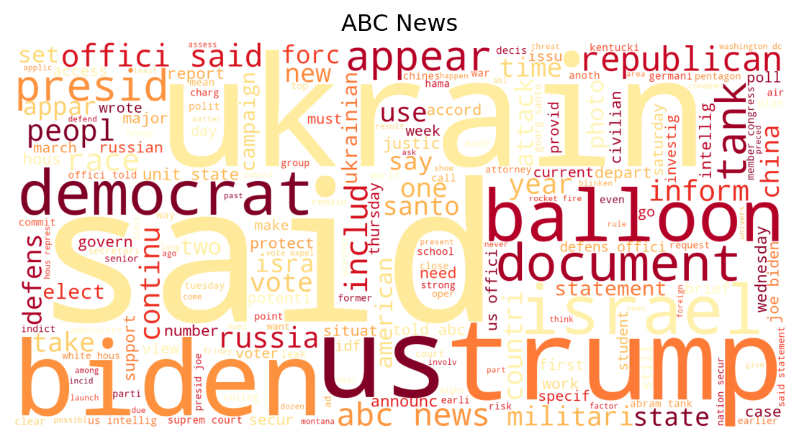
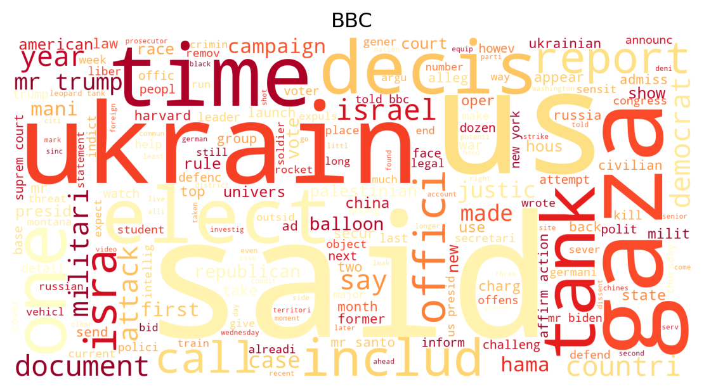
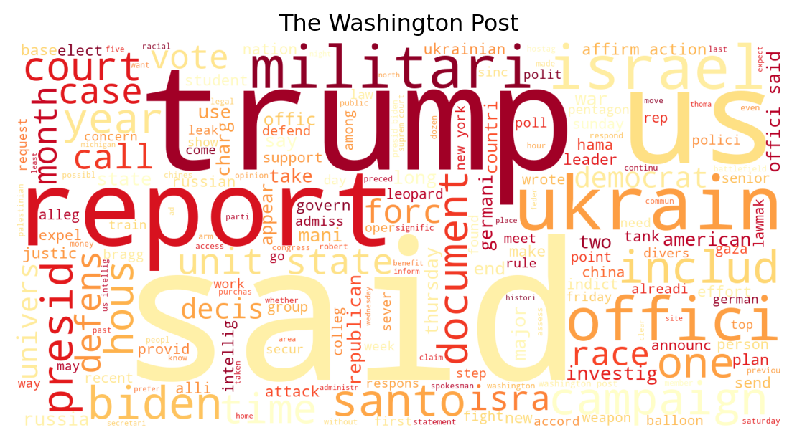

By now, you’ve surely heard many opinions and likely have one yourself about which news sources are trustworthy and not. These opinions are usually divided by political party identification. People’s views on these matters are also largely subjective, but can they be confirmed or changed with a more technical analysis on news sources? What can we tell about each news source just based on their choice of words? This project takes a closer look at the language that various news sources use and examines if these sources really report on the same events in a different manner. This will be done through sentiment analysis and creating classifiers to see if we can determine the source of an article, given the article text.
Data Collection
Nine total news sites are studied for a mix of political affiliations, including CNN, The New York Times, The Washington Post, Fox News, New York Post, NBC News, The Wall Street Journal, BBC, and ABC News. Eight political events and topics from 2023 were chosen as the subjects for the articles to be studied for a higher potential for bias. For each topic, one article from each source was collected, making for a total of 72 articles. To ensure as little room for extraneous variables as possible, the articles for a particular topic across sources were chosen in a way so that they were published on the same day or as closely together in time as possible. This would mean that each source should have had the same information available to them when writing the article. The text from each article was collected through copying and pasting into its own text file. In addition, a string denoting each article’s topic and source name was added to the end of each article’s text file to be able to identify it.
Topics chosen for article selection
Indictment of Trump
Supreme Court’s ruling against affirmative action
Biden’s low approval rates in polls
Deadliest attack by Hamas to date
Chinese surveillance balloon
Pentagon document leaks
Sending tanks to Ukraine
Expulsion of George Santos
Data Preprocessing
The text had to go through a lot of preparation before it could be ready for analyzing. Functions were created to make this process faster for each article. One function accesses an article’s text file and returns a string of all the text in there. Another function cleans the text, which includes making all text lowercase, removing punctuation, removing stopwords (words like “and,” “the,” etc.), and stemming words, if desired. Stemming words keeps only the root form of a word, removing suffixes so that words like “jumps” and “jumping” are both reduced to “jump.” This is desired for some parts of the analysis in this project, but not others. The idea to create the two preprocessing functions used and what they may include was taken from Machine Learning Mastery (see Brownlee (2020)).
Code
# don't show future warningsimport warnings#warnings.simplefilter(action='ignore', category=FutureWarning)warnings.filterwarnings("ignore")# initialize dictionary to be able to trace back a stemmed word to its original formstemmed_dict = {}def file_to_string(filename):'''Opens the input text file and returns a string of all its text.'''file=open(filename, 'r') text =file.read()file.close() text = text.replace('\n', ' ') text = text.replace(' ', ' ')return textdef clean_text(text, stem):'''Takes in a string of text and cleans it by converting to lowercase, removing punctuation, and removing stopwords. Also takes in a binary value to indicate if stemming should be performed. Returns the new string.'''if stem notin [0, 1]:raiseValueError("Stem must be a binary value (0 or 1)") ps = PorterStemmer() stemmed_dict = {}# create list of stopwords stopwords_list = stopwords.words('english')# make the text lowercase text = text.lower() text = text.replace('—', ' ')# the three below would be stemmed to "u", rather than "us" for example text = text.replace('u.s.', 'us') text = text.replace('u.k.', 'uk') text = text.replace('u.n.', 'un')# convert to ascii characters text = text.encode("ascii", "ignore").decode()forchrin text:# only keep characters in the string that are not punctuation symbolsif (chrin string.punctuation orchrin string.digits): text = text.replace(chr, ' ') text = text.replace(' ', ' ')# stem the tokens within the text tokens = text.split() new_tokens = []for token in tokens[:-2]: # last two tokens identify source and topic, we do not want to stem them# only include new token in the cleaned list if not a stopwordif token notin stopwords_list:if stem ==1: stemmed_word = ps.stem(token) new_tokens.append(stemmed_word)# to be able to map each token to the resulting stemmed wordif token notin stemmed_dict: stemmed_dict[token] = stemmed_wordelse: new_tokens.append(token)# add back in last two tokens new_tokens.append(tokens[-2]) new_tokens.append(tokens[-1]) cleaned_text =" ".join(new_tokens) cleaned_text = cleaned_text.replace(' ', ' ')return cleaned_text
Dataframes
All of the article text collected is then transformed into multiple dataframe versions. One way of representing textual data within a dataframe is with binary values. In this case, each column is a token, or a word, that appears in any of the documents (articles) collected. Each row represents one document. The values are either a 0 or 1, denoting whether or not the token appears within the article. Another dataframe representation has the values instead be the frequencies of each token within an article. Finally, a third dataframe is created with the Term Frequency-Inverse Document Frequency (TF-IDF) scores of the tokens within an article as the values. A TF-IDF score signifies the importance and uniqueness of a word within an article, as it compares to the remaining documents. Some of these dataframes may work better than others when it comes to the predictive modeling portion of the project and revealing patterns within the text of a news source. An example dataframe is shown below, with the TF-IDF scores of each stemmed token shown for the first five articles (rows).
For the clustering part of the analysis, a new dataframe is also created with each row representing not just one article, but all articles from a single source. This is because we will be clustering entire sources and not individual articles.
Code
import pandas as pdimport numpy as npimport nltkfrom nltk.corpus import stopwordsfrom nltk.stem import PorterStemmerimport stringfrom string import punctuationfrom tensorflow.keras.preprocessing.text import Tokenizer# looping through all text files to apply preprocessing functionsarticle_docs = []dir= os.listdir('data/text/')dir.sort()for filename indir: filepath = os.path.join('data/text/', filename)if filename.split(".")[-1] =="txt": article_string = file_to_string(filepath) new_string = clean_text(article_string, 1) article_docs.append(new_string)# convert the list of article strings into a binary-value dataframet = Tokenizer()t.fit_on_texts(article_docs)encoded_docs = t.texts_to_matrix(article_docs, mode='binary')words = [x for x in t.word_index.keys()]binary_df = pd.DataFrame(data = encoded_docs[:, 1:], columns=words)# List of conditionssource_conditions = [ binary_df['abcarticle'] ==1 , binary_df['bbcarticle'] ==1 , binary_df['cnnarticle'] ==1 , binary_df['foxarticle'] ==1 , binary_df['nbcarticle'] ==1 , binary_df['nyparticle'] ==1 , binary_df['nytarticle'] ==1 , binary_df['wparticle'] ==1 , binary_df['wsjarticle'] ==1]# List of values to returnsource_choices = ["ABC News" , "BBC" , "CNN" , "Fox News" , "NBC News" , "New York Post" , "The New York Times" , "The Washington Post" , "The Wall Street Journal"]# List of conditionstopic_conditions = [ binary_df['affirmativearticle'] ==1 , binary_df['balloonarticle'] ==1 , binary_df['bidenarticle'] ==1 , binary_df['hamasarticle'] ==1 , binary_df['pentagonarticle'] ==1 , binary_df['santosarticle'] ==1 , binary_df['tanksarticle'] ==1 , binary_df['trumparticle'] ==1]# List of values to returntopic_choices = ["Supreme Court Ruling on Affirmative Action" , "Chinese Surveillance Balloon" , "Biden's Low Approval Rates in Polls" , "The Deadliest Attack by Hamas" , "Pentagon Documents Leak" , "George Santos' Expulsion from Congress" , "U.S. and Germany Send Tanks to Ukraine" , "Trump's Indictment"]# create a new source column binary_df["article_source"] = np.select(source_conditions, source_choices, "ERROR")# create a new topic columnbinary_df["article_topic"] = np.select(topic_conditions, topic_choices, "ERROR")# drop the token columns that identify the topic/source, not part of actual article textbinary_df.drop(columns=['abcarticle', 'bbcarticle', 'cnnarticle', 'foxarticle', 'nbcarticle','nyparticle', 'nytarticle', 'wparticle', 'wsjarticle', 'affirmativearticle','balloonarticle', 'bidenarticle', 'hamasarticle', 'pentagonarticle','santosarticle', 'tanksarticle', 'trumparticle'], inplace=True)binary_df.head()encoded_docs_freq = t.texts_to_matrix(article_docs, mode='count')freq_df = pd.DataFrame(data = encoded_docs_freq[:, 1:], columns=words)# List of conditionssource_conditions = [ freq_df['abcarticle'] ==1 , freq_df['bbcarticle'] ==1 , freq_df['cnnarticle'] ==1 , freq_df['foxarticle'] ==1 , freq_df['nbcarticle'] ==1 , freq_df['nyparticle'] ==1 , freq_df['nytarticle'] ==1 , freq_df['wparticle'] ==1 , freq_df['wsjarticle'] ==1]# List of values to returnsource_choices = ["ABC News" , "BBC" , "CNN" , "Fox News" , "NBC News" , "New York Post" , "The New York Times" , "The Washington Post" , "The Wall Street Journal"]# List of conditionstopic_conditions = [ freq_df['affirmativearticle'] ==1 , freq_df['balloonarticle'] ==1 , freq_df['bidenarticle'] ==1 , freq_df['hamasarticle'] ==1 , freq_df['pentagonarticle'] ==1 , freq_df['santosarticle'] ==1 , freq_df['tanksarticle'] ==1 , freq_df['trumparticle'] ==1]# List of values to returntopic_choices = ["Supreme Court Ruling on Affirmative Action" , "Chinese Surveillance Balloon" , "Biden's Low Approval Rates in Polls" , "The Deadliest Attack by Hamas" , "Pentagon Documents Leak" , "George Santos' Expulsion from Congress" , "U.S. and Germany Send Tanks to Ukraine" , "Trump's Indictment"]# create a new source column freq_df["article_source"] = np.select(source_conditions, source_choices, "ERROR")# create a new topic columnfreq_df["article_topic"] = np.select(topic_conditions, topic_choices, "ERROR")# drop the token columns that identify the topic/source, not part of actual article textfreq_df.drop(columns=['abcarticle', 'bbcarticle', 'cnnarticle', 'foxarticle', 'nbcarticle','nyparticle', 'nytarticle', 'wparticle', 'wsjarticle', 'affirmativearticle','balloonarticle', 'bidenarticle', 'hamasarticle', 'pentagonarticle','santosarticle', 'tanksarticle', 'trumparticle'], inplace=True)freq_df.head()# create dataframe with tf-idf valuesencoded_docs_tfidf = t.texts_to_matrix(article_docs, mode='tfidf')tfidf_df = pd.DataFrame(data = encoded_docs_tfidf[:, 1:], columns=words)# List of conditionssource_conditions = [ tfidf_df['abcarticle'] !=0 , tfidf_df['bbcarticle'] !=0 , tfidf_df['cnnarticle'] !=0 , tfidf_df['foxarticle'] !=0 , tfidf_df['nbcarticle'] !=0 , tfidf_df['nyparticle'] !=0 , tfidf_df['nytarticle'] !=0 , tfidf_df['wparticle'] !=0 , tfidf_df['wsjarticle'] !=0]# List of values to returnsource_choices = ["ABC News" , "BBC" , "CNN" , "Fox News" , "NBC News" , "New York Post" , "The New York Times" , "The Washington Post" , "The Wall Street Journal"]# List of conditionstopic_conditions = [ tfidf_df['affirmativearticle'] !=0 , tfidf_df['balloonarticle'] !=0 , tfidf_df['bidenarticle'] !=0 , tfidf_df['hamasarticle'] !=0 , tfidf_df['pentagonarticle'] !=0 , tfidf_df['santosarticle'] !=0 , tfidf_df['tanksarticle'] !=0 , tfidf_df['trumparticle'] !=0]# List of values to returntopic_choices = ["Supreme Court Ruling on Affirmative Action" , "Chinese Surveillance Balloon" , "Biden's Low Approval Rates in Polls" , "The Deadliest Attack by Hamas" , "Pentagon Documents Leak" , "George Santos' Expulsion from Congress" , "U.S. and Germany Send Tanks to Ukraine" , "Trump's Indictment"]# create a new source column tfidf_df["article_source"] = np.select(source_conditions, source_choices, "ERROR")# create a new topic columntfidf_df["article_topic"] = np.select(topic_conditions, topic_choices, "ERROR")# drop the token columns that identify the topic/source, not part of actual article texttfidf_df.drop(columns=['abcarticle', 'bbcarticle', 'cnnarticle', 'foxarticle', 'nbcarticle','nyparticle', 'nytarticle', 'wparticle', 'wsjarticle', 'affirmativearticle','balloonarticle', 'bidenarticle', 'hamasarticle', 'pentagonarticle','santosarticle', 'tanksarticle', 'trumparticle'], inplace=True)tfidf_df.head()# create a list of strings where each string is all articles from one source (for dendogram)source_docs = []j =0for i inrange(9):# looping through each article of each source, and only taking up until and not including second to last# token, bc last two tokens represent the name of the source and topic of article# for last article, we index up until and not including only the last token bc we don't want to include# the topic of the article, but we do want to include the source name, which is the second to last token source =" ".join(article_docs[j].split()[:-2]) +" "+" ".join(article_docs[j+1].split()[:-2]) +" "\+" ".join(article_docs[j+2].split()[:-2]) +" "+" ".join(article_docs[j+3].split()[:-2]) +" "\+" ".join(article_docs[j+4].split()[:-2]) +" "+" ".join(article_docs[j+5].split()[:-2]) +" "\+" ".join(article_docs[j+6].split()[:-2]) +" "+" ".join(article_docs[j+7].split()[:-1]) source_docs.append(source) j +=8source_docs# create a dataframe of token tf-idf's with each row representing all articles of one source# convert the list of article strings into a tf-idf-value dataframet = Tokenizer()t.fit_on_texts(source_docs)encoded_source_docs = t.texts_to_matrix(source_docs, mode='tfidf')words = [x for x in t.word_index.keys()]tfidf_source_df = pd.DataFrame(data = encoded_source_docs[:, 1:], columns=words)# List of conditionssource_conditions = [ tfidf_source_df['abcarticle'] !=0 , tfidf_source_df['bbcarticle'] !=0 , tfidf_source_df['cnnarticle'] !=0 , tfidf_source_df['foxarticle'] !=0 , tfidf_source_df['nbcarticle'] !=0 , tfidf_source_df['nyparticle'] !=0 , tfidf_source_df['nytarticle'] !=0 , tfidf_source_df['wparticle'] !=0 , tfidf_source_df['wsjarticle'] !=0]# List of values to returnsource_choices = ["ABC News" , "BBC" , "CNN" , "Fox News" , "NBC News" , "New York Post" , "The New York Times" , "The Washington Post" , "The Wall Street Journal"]# create a new source column tfidf_source_df["article_source"] = np.select(source_conditions, source_choices, "ERROR")# remove article_source column and make it the indextfidf_source_df.set_index('article_source', inplace=True) # drop the columns for the tokens that were used to identify the articlestfidf_source_df.drop(['abcarticle', 'bbcarticle', 'cnnarticle', 'foxarticle','nbcarticle', 'nyparticle', 'nytarticle', 'wparticle','wsjarticle'], axis=1, inplace=True)# tfidf_source_df
Exploratory Analysis
Clustering
To begin exploring this data, we may be interested in clustering news sources together to see which ones are most similar to each other. This can be done in a dendrogram using the TF-IDF scores of their tokens, for example.
Code
# create dendrogram with complete linkage from tfidf scores df,# whose rows each represent one sourcefrom scipy.cluster.hierarchy import dendrogram, linkageimport matplotlib.pyplot as pltZ = linkage(tfidf_source_df, 'complete')fig = plt.figure(figsize=(14, 4))fig.suptitle("Complete Linkage", fontsize=14)plt.xlabel('Source', fontsize=6)plt.yticks(fontsize =8) dn = dendrogram(Z, labels=tfidf_source_df.index)plt.xticks(fontsize =8)plt.show()
According to the dendrogram, ABC News and NBC News as well as BBC and Fox News are the two pairs of sources that are most similar to one another. Again, the articles were compared by looking at how similar their TF-IDF scores were for the same tokens. We also see that there aren’t two distinct groups of sources clustered together, while we may have expected sources to be clustered together based on their political affiliation. However, it’s important to keep in mind that these results are based on only the small sample of articles used for each source and may not be generalizable to the sources as wholes. It is also important to keep in mind that the similarity of these sources is solely being based on the vocabulary usage of each source and not any other factors.
Wordclouds
Another thing that could be interesting to look at are the wordclouds for each source. On a wordcloud, the bigger the word is, the more frequently it appeared within the text. Looking at these could give a sense of the difference in vocabulary between each source. This is why topic coverage was kept the same across all sources, so that comparisons like these may be made to scope out differences in wording, given that the sources are each writing about the same topics.
Code
# create a function to be able to make a series of wordclouds, one for each sourcefrom wordcloud import WordClouddef create_wordcloud(text, title):'''Given a string of all text and a string for the title, creates a wordcloud.''' plt.figure(figsize = (6,3)) wc = WordCloud(colormap ="YlOrRd", background_color='white', width=1600, height=800, max_font_size =400).generate(text) plt.title(title, fontsize=12) plt.axis("off") title_snake = title.lower().replace(" ", "_") wc.to_file(f'wordcloud_{title_snake}.png') plt.tight_layout(pad=0) plt.imshow(wc)# loop through the list of strings, each one representing all articles'# text from a given source, and create the wordcloud for it. for i inrange(len(source_docs)): create_wordcloud(source_docs[i], tfidf_source_df.index[i])



Looking at the wordclouds
The words are not misspelled. Stemmed words were used for the creation of the wordclouds to avoid repetition of common words that just appear in various tenses.
The wordclouds for each source look mostly similar, with the most common word throughout them all being “said.” This is unsurprising. The only exception here is Fox News, whose most frequently appearing word throughout all the articles is “Trump.” Trump is a frequently appearing word for all sources because one of the topics chosen for the articles is explicitly about Trump. However, for Fox News, it is even more commonly used than the word “said.” This is interesting, but this alone should not provoke any conclusions about this source being biased towards Trump, for example. All that this means is that “Trump” is the word that appeared the most frequently throughout Fox News’ articles, which could potentially be because Fox News had the longest article about Trump. Longer articles will certainly have a higher count of words overall. This can be investigated further.
Does the length of an article have to do with how frequently a certain word appears?
Code
# create a list of unstemmed article document texts# looping through all text files to apply preprocessing functionsfrom plotnine import*from IPython.display import Imagearticle_docs_unstemmed = []dir= os.listdir('data/text/')dir.sort()for filename indir: filepath = os.path.join('data/text/', filename)if filename.split(".")[-1] =="txt": article_string = file_to_string(filepath) new_string = clean_text(article_string, 0) article_docs_unstemmed.append(new_string)# investigating why Fox News has Trump as most frequent word,# to see if it's related to length of article # create lists for the lengths of trump articles and the frequencies of word# "Trump" within the articlestrump_article_lengths = []trump_word_counts = []i =1for article in article_docs_unstemmed:if i%8==0: trump_count =0for word in article.split():if word =="trump": trump_count +=1 trump_word_counts.append(trump_count) article_length =len(article.split()) trump_article_lengths.append(article_length) i +=1# let's do the same for the word "biden" in the biden articles and see if there are outliers # create lists for the lengths of biden articles and the frequencies of word# "Biden" within the articlesbiden_article_lengths = []biden_word_counts = []i =1for article in article_docs_unstemmed:if article.split()[-1] =="bidenarticle": biden_count =0for word in article.split():if word =="biden": biden_count +=1 biden_word_counts.append(biden_count) article_length =len(article.split()) biden_article_lengths.append(article_length) i +=1# create a df with sources, their trump article lengths, and the frequency of the word "trump"trump_words = pd.DataFrame(columns=['source', 'article_length', 'trump_word_count'])trump_words['source'] = tfidf_source_df.indextrump_words['article_length'] = trump_article_lengthstrump_words['trump_word_count'] = trump_word_countstrump_words# create a df with sources, their biden article lengths, and the frequency of the word "biden"biden_words = pd.DataFrame(columns=['source', 'article_length', 'biden_word_count'])biden_words['source'] = tfidf_source_df.indexbiden_words['article_length'] = biden_article_lengthsbiden_words['biden_word_count'] = biden_word_counts# create scatterplot of length of trump article vs frequency of the word "Trump"trump_scatter = (ggplot(data=trump_words, mapping=aes(x='article_length', y='trump_word_count', color='source'))+ geom_point(show_legend=True)+ geom_smooth(method ="lm", se=False, color="darkgrey")+ labs(title="Trump Article Length vs. Mentions of Trump", x='# of Words in Article', y='# of Times "Trump" Mentioned'))# create scatterplot of length of biden article vs frequency of the word "Biden"biden_scatter = (ggplot(data=biden_words, mapping=aes(x='article_length', y='biden_word_count', color='source'))+ geom_point(show_legend=True)+ geom_smooth(method ="lm", se=False, color="darkgrey")+ labs(title="Biden Article Length vs. Mentions of Biden", x='# of Words in Article', y='# of Times "Biden" Mentioned'))trump_scatter.save("trump_scatterplot.png", dpi=600)biden_scatter.save("biden_scatterplot.png", dpi=600)trump_img ='trump_scatterplot.png'display(Image(url=trump_img))biden_img ='biden_scatterplot.png'Image(url=biden_img)
Above we used scatterplots to see how the length of the Trump articles are related to the frequency of the word “Trump” within them, by source. We do, in fact, see that the point for Fox News, corresponding to the article Singman and Dhanis (2023), is an outlier. Given its article length, it does mention Trump a lot more frequently than the Trump articles from other sources. Out of curiosity, we look at the same visualization for the word “Biden” in the Biden articles. Interestingly, Fox News again appears to be an outlier (see Steinhauser (2023)). Given its article length, it also mentions Biden a lot more frequently than the remaining sources. Now, it is not as easy to make assumptions about the partiality of Fox News just based on these word frequencies. They could be more telling of the writing styles of each source, or it could also merely be a result of using such a small sample size of articles.
Sentiment Analysis
Next, the connotation of each article and source overall is studied. The TextBlob package in Python provides polarity and subjectivity scores for any text string. A polarity score, on a scale of [-1, 1], tells if the text has a positive or negative connotation to it. Subjectivity scores, on a scale of [0, 1] tells how opinionated or subjective a text sounds as opposed to being factual. The higher the score, the more subjective the text is. A dataframe is created that displays the polarity and subjectivity scores of each article, with various other columns being created that help place each article’s score in the context of the entire corpus of documents and that will be used in following visualizations.
Code
# calculate polarity and subjectivity scores, create dataframefrom textblob import TextBlobscores_df = pd.DataFrame({'source':tfidf_df['article_source'], 'topic':tfidf_df['article_topic']})# shorten some source names to fit on graph laterscores_df['source'] = np.where(scores_df['source'] =="The New York Times", "New York Times", scores_df['source'])scores_df['source'] = np.where(scores_df['source'] =="The Washington Post", "Washington Post", scores_df['source'])scores_df['source'] = np.where(scores_df['source'] =="The Wall Street Journal", "Wall Street Journal", scores_df['source'])# initialize list of polarity and subjectivity scorespolarity_scores = []subjectivity_scores = []# calculate the scores for each article and add them to the corresponding list of scoresfor article in article_docs_unstemmed: polarity_scores.append(round(TextBlob(" " .join(article.split()[:-2])) .sentiment.polarity, 2)) subjectivity_scores.append(round(TextBlob(" " .join(article.split()[:-2])) .sentiment.subjectivity, 2))# add a column in the df for the polarity and subjectivity scores, based on the listsscores_df['polarity_score'] = polarity_scoresscores_df['subjectivity_score'] = subjectivity_scores# initialize list of average polarity scores for each topic and sourceaverage_topic_polarity_scores = []average_source_polarity_scores = []# calculate the average polarity scores for each topic, add to that listfor topic in scores_df['topic'].value_counts().index: mean_score =round(scores_df[scores_df['topic'] == topic]['polarity_score'].mean(), 2) average_topic_polarity_scores.append(mean_score)# calculate the average polarity scores for each source, add to that listfor source in scores_df['source'].value_counts().index: mean_score =round(scores_df[scores_df['source'] == source]['polarity_score'].mean(), 2)for i inrange(8): average_source_polarity_scores.append(mean_score)# add columns for the two lists above, average polarity scores by topic and sourcescores_df['average_polarity_for_topic'] = average_topic_polarity_scores *9scores_df['average_polarity_for_source'] = average_source_polarity_scores# initialize lists for average subjectivity scores by topic and sourceaverage_topic_subjectivity_scores = []average_source_subjectivity_scores = []# calculate average subjectivity score by topic, add to that listfor topic in scores_df['topic'].value_counts().index: mean_score =round(scores_df[scores_df['topic'] == topic]['subjectivity_score'].mean(), 2) average_topic_subjectivity_scores.append(mean_score)# calculate average subjectivity score by source, add to that listfor source in scores_df['source'].value_counts().index: mean_score =round(scores_df[scores_df['source'] == source]['subjectivity_score'].mean(), 2)for i inrange(8): average_source_subjectivity_scores.append(mean_score)# create columns for the two lists above, average subjectivity scores by topic and sourcescores_df['average_subjectivity_for_topic'] = average_topic_subjectivity_scores *9scores_df['average_subjectivity_for_source'] = average_source_subjectivity_scores# create various new columns, for each score type's difference from the mean# for that topic or sourcescores_df['polarity_diff_from_topic_mean'] = scores_df['polarity_score'] - scores_df['average_polarity_for_topic']scores_df['subjectivity_diff_from_topic_mean'] = scores_df['subjectivity_score'] - scores_df['average_subjectivity_for_topic']scores_df['polarity_diff_from_source_mean'] = scores_df['polarity_score'] - scores_df['average_polarity_for_source']scores_df['subjectivity_diff_from_source_mean'] = scores_df['subjectivity_score'] - scores_df['average_subjectivity_for_source']# calculate how much on average each source deviates from the average polarity# or subjectivity score for that topic, create columns for those calculationssources_polarity_dev = []for source in scores_df['source'].value_counts().index: total_dev = scores_df[scores_df['source'] == source]['polarity_diff_from_topic_mean'].sum()for i inrange(8): sources_polarity_dev.append(total_dev/8)sources_subjectivity_dev = []for source in scores_df['source'].value_counts().index: total_dev = scores_df[scores_df['source'] == source]['subjectivity_diff_from_topic_mean'].sum()for i inrange(8): sources_subjectivity_dev.append(total_dev/8)scores_df['average_source_polarity_deviation_from_topic_mean'] = sources_polarity_devscores_df['average_source_subjectivity_deviation_from_topic_mean'] = sources_subjectivity_dev# create column to indicate whether the polarity score is positive or negative,# to color graphs by laterscores_df['polarity_sign'] = np.where(scores_df['polarity_score'] >0, 'pos', 'neg')# create column for absolute value of the polarity scorescores_df['polarity_magnitude'] =abs(scores_df['polarity_score'])scores_df.head(5)
Since the documentation of the calculation of these scores is limited, one may wonder if they are somehow related. That is, are polarity scores related to subjectivity scores in some way? A scatterplot is created to see if a higher polarity score magnitude (absolute value) may mean a higher subjectivity score as well.
Code
# to better understand subjectivity scores: are polarity score magnitudes and subjectivity scores correlated?# this may suggest that polarity score is used in the calculation of a subjectivity score# colored by topicpol_sub = (ggplot(scores_df, aes(x="polarity_magnitude", y="subjectivity_score", color='topic'))+ geom_point()+ labs(x="Absolute Value of Polarity Score", y='Subjectivity Score', title='Are Polarity Score Magnitudes Correlated with Subjectivity Scores?'))pol_sub.save("scores_correlation.png", dpi=600)pol_sub_img ='scores_correlation.png'Image(url=pol_sub_img)
There does not appear to be a linear or any other sort of relationship between the polarity and subjectivity scores of the articles used in this project. However, the graph does show almost a cluster of points of the same color, telling that the articles about the Supreme Court ruling against affirmative action tend to have stronger polarity scores. The same graph may be visualized colored by source instead, to see if any clusters of sources are observed.
Code
# scatterplot to see if polarity magnitudes and subjectivity scores are# correlated, colored by sourcepol_sub_2 = (ggplot(scores_df, aes(x="polarity_magnitude", y="subjectivity_score", color='source'))+ geom_point()+ labs(x="Absolute Value of Polarity Score", y='Subjectivity Score', title='Are Polarity Score Magnitudes Correlated with Subjectivity Scores?'))# save imagepol_sub_2.save("scores_correlation2.png", dpi=600)pol_sub_img2 ='scores_correlation2.png'Image(url=pol_sub_img2)
Something that can be observed on the scatterplot above is that the green dots, both for CNN and Fox News, tend to be on the lower half of the plot, meaning their articles tend to have lower subjectivity scores. In addition, the dark blue dots, representing The New York Times, tend to be on the upper half, signifying higher subjectivity scores for its articles.
These scores will now be compared across sources in a different, more comprehensive way. It is intuitive that some of the more grim topics, like the deadly Hamas attack, should have a negative polarity score. Other more neutral topics may have positive polarity scores. Taking an average of the polarity scores would not be a good measure since the negative and positive scores could cancel each other out and not give a clear picture of the connotation of each source compared to others. Instead, the average polarity score is computed for each topic. Then, the average polarity score for the article’s topic is subtracted from the article’s polarity score to get its deviation from the mean. For each source, the average of these deviations is computed, which will tell if a source tends to write in a more negative or positive connotation, even given the nature of the topic it is writing about.
Code
# create a df for each source and its polarity score total deviations from the topic meansfrom pandas.api.types import CategoricalDtypepolarity_devs = pd.DataFrame({'source':scores_df['source'].value_counts().index, 'polarity_dev':scores_df[scores_df['topic'] =='Chinese Surveillance Balloon']\ ['average_source_polarity_deviation_from_topic_mean']})# create a column denoting if deviation is above or below mean to color graph by laterpolarity_devs['sign'] = np.where(polarity_devs['polarity_dev'] >0, 'pos', 'neg')polarity_devs = polarity_devs.reindex(polarity_devs['polarity_dev'].abs().sort_values(ascending=False).index)polarity_devs.reset_index(drop=True, inplace=True)source_order = CategoricalDtype( ["New York Times", "Wall Street Journal", "ABC News", "NBC News", "CNN", "New York Post", "Washington Post", "Fox News", "BBC"], ordered=False)polarity_devs['source'] = polarity_devs['source'].astype(source_order)polarity_devs# create bar chart representing how much, on average, a source's article# deviates away from that topic's mean polarity score# intended to show if a source tends to be more negative/positive than average, # even accounting for the nature of the topiccolors = {"pos":'#ffbf00', "neg":'#b7141c'} score_dev = (ggplot(polarity_devs, aes(x="source", y="polarity_dev", fill="sign"))+ geom_col(stat="identity")+ labs(x="Source", y='Average Article Polarity Score Deviation', title='Average Source Polarity Score Deviations from Mean')+ theme(figure_size = (10, 4), axis_text_x=element_text(size=7, face='bold'), title = element_text(size=13),legend_position ="none")+ scale_fill_manual(values = colors))# save imagescore_dev.save("polarity_score_dev.png", dpi=300)pol_score_dev_img ='polarity_score_dev.png'Image(url=pol_score_dev_img)
The visualization above tells us that The New York Times articles tend to be the most negative on average. They have the largest deviations from the topic’s average polarity scores, which may indicate stronger wording. Each individual may infer what they wish with these results, but definitive conclusions should not be drawn from them, which will be explained a bit later. ABC News tends to write their articles more positive than average for the topics’ mean polarity scores. BBC’s articles are the closest to average polarity scores for each topic. The polarity scores may be viewed individually for the set of articles of any topic. Below, we see the polarity scores for the articles about the ruling against affirmative action. The New York Times was the only source with a negative polarity score for this topic, which could already be suggestive of its political views.
Code
# create bar chart of polarity scores of articles about a specific topicpol_affirm = (ggplot(scores_df[scores_df['topic']=="Supreme Court Ruling on Affirmative Action"], aes(x="reorder(source, -polarity_score)", y="polarity_score", fill="polarity_sign"))+ geom_col(stat="identity")+ labs(x='Source', y='Polarity Score', title='Polarity Scores for Ban on Affirmative Action Articles')+ theme(figure_size = (10, 4), axis_text_x=element_text(size=8.5, face='bold'), title = element_text(size=13), legend_position ="none")+ scale_fill_manual(values = colors))# save imagepol_affirm.save("polarity_affirmative_articles.png", dpi=300)pol_affirm_img ='polarity_affirmative_articles.png'Image(url=pol_affirm_img)
Now let’s look at a comparison of each source’s average subjectivity scores. These do not need to be broken up by topic, since the scale for the score is [0,1].
Code
# create a df with average subjectivity scores per sourcesource_avg_subj = pd.DataFrame({'source':scores_df['source'].value_counts().index, 'avg_subj':scores_df[scores_df['topic'] =='Chinese Surveillance Balloon']\ ['average_subjectivity_for_source']})source_avg_subj.sort_values(by='avg_subj', ascending=True, inplace=True)source_avg_subj.reset_index(drop=True, inplace=True)# order in ascending order of subjectivitysource_order = CategoricalDtype( ["Fox News", "Wall Street Journal", "CNN", "Washington Post", "BBC", "New York Post", "ABC News", "NBC News", "New York Times"], ordered=False)source_avg_subj['source'] = source_avg_subj['source'].astype(source_order)source_avg_subj# bar chart showing avg subjectivity per sourcesub = (ggplot(source_avg_subj, aes(x="source", y="avg_subj"))+ geom_col(stat="identity", fill="#ffa140")+ labs(x='Source', y='Average Subjectivity Score', title='Average Subjectivity Score by Source')+ theme(figure_size = (10, 4), axis_text_x=element_text(size=8.5, face='bold'), title = element_text(size=13), legend_position ="none"))# save imagesub.save("avg_subjectivity.png", dpi=300)sub_img ='avg_subjectivity.png'Image(url=sub_img)
The bar chart above shows that Fox News has the lowest subjectivity scores on average, while the New York Times has the highest subjectivity score on average. Surprised? Do these results align with your opinions or what you commonly hear about these sources? Regardless, it is important to remember what these scores mean exactly and what we are able to reasonably infer from these results. The package that computes these scores has limited documentation, so the exact formulas are not known for the computation of a polarity or subjectivity score of a text. Each individual word has a scoring of its own and is marked as positive or negative, and the overall polarity score is some sort of aggregation of these scores. This does limit us in the interpretation of the scores. Moreover, this is only a small sample of articles collected from each source and their insights should not represent a source as a whole. It is entirely possible that a larger sample of articles from a wider variety of topics could yield different results.
To further analyze the polarity scores, we may want to know which ones are outliers. So, for each topic, the interquartile range formula is used to find any articles with an outlier score. The articles and their polarity scores that were identified as outliers are shown in the table below.
Code
# create a list of tuples that contain articles that have an outlier polarity score,# compared to other articles about the same topicarticles =[]# check for outliers topic by topicfor topic in scores_df['topic'].value_counts().index: topic_df = scores_df[scores_df['topic'] == topic] average_polarity = topic_df['average_polarity_for_topic'].iloc[0]# use IQR formula to detect outliers Q1 = topic_df['polarity_score'].describe()[4] Q3 = topic_df['polarity_score'].describe()[6] IQR = Q3-Q1 lower = Q1-(1.5*IQR) upper = Q3+(1.5*IQR)# the line below would print the lower and upper bounds for non-outliers# for each topic#print(topic, "lower bound:", round(lower, 2), "upper bound:", round(upper,2))# check if an article has an outlier polarity score (beyond lower/upper limits)for row in topic_df.itertuples():if row.polarity_score < lower or row.polarity_score > upper: articles.append((row.source, row.topic, row.polarity_score, average_polarity))# create lists about outlier article information to create dataframe for themoutlier_source_list = []outlier_topic_list = []outlier_polarity_list = []average_polarity_list = []for article in articles: outlier_source_list.append(article[0]) outlier_topic_list.append(article[1]) outlier_polarity_list.append(article[2]) average_polarity_list.append(article[3])# display in dataframe the articles with an outlier polarity scoreoutlier_df = pd.DataFrame({'Source':outlier_source_list,'Topic':outlier_topic_list,'Polarity Score':outlier_polarity_list,'Average Polarity for Topic':average_polarity_list})display(outlier_df)
Source
Topic
Polarity Score
Average Polarity for Topic
0
BBC
Supreme Court Ruling on Affirmative Action
0.16
0.11
1
New York Times
Supreme Court Ruling on Affirmative Action
-0.02
0.11
2
Wall Street Journal
Supreme Court Ruling on Affirmative Action
0.07
0.11
3
New York Post
Chinese Surveillance Balloon
-0.01
0.04
4
Wall Street Journal
Chinese Surveillance Balloon
0.02
0.04
5
Wall Street Journal
George Santos' Expulsion from Congress
-0.04
0.02
From looking at outlier polarity scores, the articles about the Supreme Court ruling against affirmative action have several outlier scores, both positive and negative. This could be telling of the major difference in opinions regarding this topic. As for sources, The Wall Street Journal had the most amount of articles with an outlier polarity score.
Predictive Modeling
Naive Bayes
Now, for the main part of this project, a few different classifiers will be used to attempt to predict the source of a given article. If this can be done with high accuracy, it will show that the wording alone of the studied sources is distinct enough to be an identifying factor. First, Naive Bayes classifiers will be trained and tested on the articles included. Six topics will be used for training, and two for testing. As many classifiers will be created as needed (28) in order to use every possible split of topics for the training and testing sets. In addition, this process will be repeated for each of the three dataframes created (using binary values, frequencies, and TF-IDF scores of tokens) for a total of 84 Naive Bayes classifiers. This means that the models will be trained on the tokens (words) that appear in each model and their values (one of the three possible mentioned). The average accuracy scores of Naive Bayes models trained on any of the three value types are displayed in the table below. Data Camp was used as a source to code the Naive Bayes model, including fitting the model and making predictions (see “Naive Bayes Classification Tutorial Using Scikit-Learn” (2023)).
Code
# import librariesfrom sklearn.naive_bayes import MultinomialNBfrom sklearn import metrics from sklearn.metrics import accuracy_score,confusion_matrix,ConfusionMatrixDisplay,f1_score# initialize a dictionary that will show the best accuracy for each kind of classifier usedbest_accuracies_by_cf = {}# define list of topics to later choose training/testing sets withtopic_list = topic_choices = ["Supreme Court Ruling on Affirmative Action" , "Chinese Surveillance Balloon" , "Biden's Low Approval Rates in Polls" , "The Deadliest Attack by Hamas" , "Pentagon Documents Leak" , "George Santos' Expulsion from Congress" , "U.S. and Germany Send Tanks to Ukraine" , "Trump's Indictment"]# initialize lists that will later be used to create a df showing the# average model accuracy for each type of value the models were trained onaverage_accuracies = []value_types = []# function to apply Naive Bayes model using different holdout article topics each timedef naive_bayes_cf(df, value_type):'''Takes in a dataframe of tokens and the desired values to train the model on (i.e. tfidf scores, frequencies) and a string representing what the values are. Trains, tests, and outputs performance metrics of a series of Multinomial Naive Bayes classifiers, one for each possible holdout set of two article topics.'''# initialize lists where each model's accuracy/f1 score will be appended# to later be able to determine the min/max of each accuracy_list = [] f1_score_list = []# loops to create a model with each combination of a testing set# consisting of two topicsfor i inrange(len(topic_list)):for j inrange(i+1, len(topic_list)):# uncomment lines below to print the holdout topics for the model#print("Holdout article topics: ")#print(topic_list[i])#print(topic_list[j])# split into training/testing df's for predictor and target variables X_train_df = df[(df['article_topic'] != topic_list[i]) & (df['article_topic'] != topic_list[j])].iloc[:, :-2] X_test_df = df[(df['article_topic'] == topic_list[i]) | (df['article_topic'] == topic_list[j])].iloc[:, :-2] y_train_df = df[(df['article_topic'] != topic_list[i]) & (df['article_topic'] != topic_list[j])]['article_source'] y_test_df = df[(df['article_topic'] == topic_list[i]) | (df['article_topic'] == topic_list[j])]['article_source']# transform the training/testing df's to arrays X_train = X_train_df.to_numpy() X_test = X_test_df.to_numpy() y_train = y_train_df.to_numpy() y_test = y_test_df.to_numpy()# create classifier object and train it on our training data nb_model = MultinomialNB() nb_model.fit(X_train, y_train)# make predictions on our testing set, output as an array predictions_array = nb_model.predict(X_test)# turn the array with predicted sources into a list prediction_list = []for pred in predictions_array: prediction_list.append(pred)# create a list of the true sources actuals_list = []for source in y_test: actuals_list.append(source)# create a dataframe from the two lists created above to show the actual vs predicted sources preds_actuals_df = pd.DataFrame({'Actual':actuals_list, 'Predicted':prediction_list})# uncomment line below if want to see the dataframe of actual vs predicted sources for each model# display(preds_actuals_df)# calculate performance metrics accuracy =round(accuracy_score(predictions_array, y_test), 2) f1 =round(f1_score(predictions_array, y_test, average="weighted"), 2)# add the model's accuracy/f1 score to the list of accuracies/f1 scores accuracy_list.append(accuracy) f1_score_list.append(f1)# check if this model's accuracy is better than the current best accuracy# for Naive Bayes, and if it is, then set its accuracy to be the# value for Naive Bayes in the dictionary initialized earliertry:if accuracy > best_accuracies_by_cf['Naive Bayes']: best_accuracies_by_cf['Naive Bayes'] = accuracyexcept: best_accuracies_by_cf['Naive Bayes'] = accuracy# uncomment lines below to display results of every model#print("Accuracy of Multinomial Naive Bayes Model:", accuracy)#print("F1 score of Multinomial Naive Bayes Model:", f1)#print("\n\n")# initialize a cumulative sum of accuracies for models trained# on the dataframe/value types defined in the function cum_acc =0# add each model's accuracy to the cumulative sumfor acc in accuracy_list: cum_acc += acc# calculate the average accuracy for a model trained on this# dataframe/value type and add it to the list of average accuracies average_accuracies.append(round(cum_acc/len(accuracy_list), 2))# add the value type used to train these models to the list of value# types, which will be used to create a df of average accuracies by value type value_types.append(value_type)# uncomment lines below if interested in displaying min/max# accuracy scores for the models trained within the function#print(f"Minimum Accuracy Score of any Multinomial Naive Bayes Model using {value_type}:",# min(accuracy_list))#print(f"Maximum Accuracy Score of any Multinomial Naive Bayes Model using {value_type}:",# max(accuracy_list))#print(f"Maximum F1 Score of any Multinomial Naive Bayes Model using {value_type}:",# max(f1_score_list))# create a list of all the dataframes/value types we want to train our classifiers ondfs = [(tfidf_df, "TFIDF Score"), (binary_df, "Binary Values"), (freq_df, "Frequencies")]# loop through the list above to create many modelsfor df in dfs: naive_bayes_cf(df[0], df[1])# create a dataframe showing each value type Naive Bayes models were trained on and the average accuracies for eachnb_results_df = pd.DataFrame({'Values Trained On':value_types, 'Average Accuracy':average_accuracies})display(nb_results_df)
Values Trained On
Average Accuracy
0
TFIDF Score
0.29
1
Binary Values
0.23
2
Frequencies
0.22
For the series of Naive Bayes models created, the maximum accuracy score reached for any model is 44%. This was for a model trained on TF-IDF scores. The average accuracy scores for Naive Bayes models trained on the different value types of tokens range between 22-29%. These accuracy scores do not seem very high. Even the best of these models’ predictions are wrong more often than they are right. However, since there are nine possible predictions that could be made (nine different sources), a random guess would expect to result in a 11% accuracy rate on average. This happens to also be the minimum accuracy score of any of these models. Therefore, all of these classifiers are still just as good or better than guessing which source an article comes from, simply given its text.
Random Forest
The same will be repeated with Random Forest models. In addition to using various holdout topic sets and dataframes to train and test these models on, a couple parameters will also be tested to see which ones result in the best performing model. Again, a table below is displayed with the average accuracy scores of models trained on a particular dataframe (value types) and set of parameters.
Code
# import libraryfrom sklearn.ensemble import RandomForestClassifier# initialize a dictionary that will hold the parameters that lead to best# accuracies of a Random Forest Modelbest_rf_params = {}# initialize lists that will be used to create a dataframe showing the# average accuracies of Random Forest models trained on a particular# dataframe and with a particular set of parametersaverage_accuracies = []value_types = []n_estimators = []criterions = []best_accuracies_by_cf['Random Forest'] =0# create a function to apply a Random Forest model using different# holdout sets and given parameters and value types to train ondef random_forest_cf(df, value_type, n, crit):'''Takes in a dataframe of tokens and the desired values to train the model on (i.e. tfidf scores, frequencies) and a string representing what the values are. Also takes in specifications for n_estimators and criterion parameters of the Random Forest classifier. Trains, tests, and outputs performance metrics of a series of RF classifiers, one for each possible holdout set of two article topics.'''# initalize lists for accuracy/f1 scores to later be able to determine the min/max of each accuracy_list = [] f1_score_list = []# loops to create a model with each combination of a testing set# consisting of two topics for i inrange(len(topic_list)):for j inrange(i+1, len(topic_list)):# uncomment lines below to print the holdout topics# and parameters used for the model# print("Holdout article topics: ")# print(topic_list[i])# print(topic_list[j])# print("n_estimators and criterion:")# print(n, crit)# split into training/testing df's for predictor and target variables X_train_df = df[(df['article_topic'] != topic_list[i]) & (df['article_topic'] != topic_list[j])].iloc[:, :-2] X_test_df = df[(df['article_topic'] == topic_list[i]) | (df['article_topic'] == topic_list[j])].iloc[:, :-2] y_train_df = df[(df['article_topic'] != topic_list[i]) & (df['article_topic'] != topic_list[j])]['article_source'] y_test_df = df[(df['article_topic'] == topic_list[i]) | (df['article_topic'] == topic_list[j])]['article_source']# transform the training/testing df's to arrays X_train = X_train_df.to_numpy() X_test = X_test_df.to_numpy() y_train = y_train_df.to_numpy() y_test = y_test_df.to_numpy()# create a classifier object and train it on the training data rf_model = RandomForestClassifier(n_estimators = n, criterion=crit, random_state=42) rf_model.fit(X_train, y_train)# make predictions on our testing set, output as an array predictions_array = rf_model.predict(X_test)# turn the array with predicted sources into a list prediction_list = []for pred in predictions_array: prediction_list.append(pred)# create a list of the true sources actuals_list = []for source in y_test: actuals_list.append(source)# create a dataframe from the two lists above to show the actual# vs predicted sources for this model preds_actuals_df = pd.DataFrame({'Actual':actuals_list, 'Predicted':prediction_list})# uncomment line below if want to see the dataframe of actual# vs predicted sources for each model# display(preds_actuals_df)# calculate performance metrics accuracy =round(accuracy_score(predictions_array, y_test), 2) f1 =round(f1_score(predictions_array, y_test, average="weighted"), 2)# add the accuracy/f1 scores for this model to the lists of accuracy/f1 scores accuracy_list.append(accuracy) f1_score_list.append(f1)# check if this model's accuracy is better than the current best # accuracy for any Random Forest model, and if it is, then set its # accuracy to be the value for Random Forest in the dictionary we # initialized earlier and update the best parameters dictionarytry:if accuracy > best_accuracies_by_cf['Random Forest']: best_accuracies_by_cf['Random Forest'] = accuracy best_rf_params['n_estimators'] = n best_rf_params['criterion'] = crit best_rf_params['value'] = value_type best_rf_params['holdout_topics'] = (topic_list[i], topic_list[j]) best_model_pred_vs_actuals = preds_actuals_df.copy()except: best_accuracies_by_cf['Random Forest'] = accuracy best_rf_params['n_estimators'] = n best_rf_params['criterion'] = crit # uncomment lines below if want to see the performance metrics# for the model# print("Accuracy of Random Forest Model:", accuracy)# print("F1 score of Random Forest Model:", f1)# print("\n\n")# initialize a cumulative sum of accuracies for models trained on the# dataframe/value types defined in the function cum_acc =0# add each model's accuracy to the cumulative sumfor acc in accuracy_list: cum_acc += acc# calculate the average accuracy of a model trained on this dataframe/value# type and with these parameters and add it to the list of average accuracies average_accuracies.append(round(cum_acc/len(accuracy_list), 2))# add the value type used for training this model and its parameters to# their lists, which will be used to create a dataframe of average# accuracies for each of these options value_types.append(value_type) n_estimators.append(n) criterions.append(crit)# uncomment lines below if interested in displaying min/max accuracies of# models trained within this function.# print(f"Minimum Accuracy Score of any Random Forest Model with {n} n_estimators, {crit} criterion, using {value_type}:",# min(accuracy_list))# print(f"Maximum Accuracy Score of any Random Forest Model with {n} n_estimators, {crit} criterion, using {value_type}:", max(accuracy_list))# print(f"Maximum F1 Score of any Random Forest Model with {n} n_estimators, {crit} criterion, using {value_type}:",# max(f1_score_list))# print("\n")# specify all parameters that we want to test models usingcrits = ['gini', 'entropy']n_ests = [10, 100, 200]# loop through the desired dataframes and parameters to create models with and# create multiple models with various holdout sets using the function defined abovefor df in dfs:for crit in crits:for n in n_ests: random_forest_cf(df[0], df[1], n, crit)# create a dataframe showing each value type that Random Forest models were trained on,# each parameter used, and the average accuracies for each of these combinationsrf_results_df = pd.DataFrame({'Values Trained On':value_types, 'n_estimators':n_estimators, 'criterion':criterions, 'Average Accuracy': average_accuracies}).sort_values('Average Accuracy', ascending=False)rf_results_df = rf_results_df.reset_index(drop=True)display(rf_results_df)# if interested in displaying best parameters and holdout set for random forest models,# uncomment line below. there could have also been other parameters# and holdout sets that led to the same accuracy score.# best_rf_params
Values Trained On
n_estimators
criterion
Average Accuracy
0
TFIDF Score
200
gini
0.42
1
Frequencies
200
gini
0.41
2
Binary Values
200
gini
0.41
3
TFIDF Score
100
gini
0.39
4
Frequencies
100
gini
0.38
5
Binary Values
100
gini
0.36
6
TFIDF Score
200
entropy
0.34
7
Frequencies
200
entropy
0.33
8
Binary Values
200
entropy
0.31
9
TFIDF Score
100
entropy
0.30
10
Frequencies
100
entropy
0.28
11
Binary Values
100
entropy
0.28
12
TFIDF Score
10
gini
0.26
13
Frequencies
10
gini
0.24
14
Binary Values
10
gini
0.21
15
Frequencies
10
entropy
0.17
16
TFIDF Score
10
entropy
0.17
17
Binary Values
10
entropy
0.17
The best random forest classifier had an accuracy score of 61%. A few models with various parameters and holdout sets resulted in this accuracy score. The same parameters that have resulted in a model with a 61% accuracy have also resulted in models with an accuracy score as low as 11% (with a different holdout set). A few of the models that performed the worst (with worse parameters) had an accuracy score of 0%. As seen, using even the best parameters in the random forest models, the accuracy can wildly differ (11-61%) depending on which topics were used for training and testing. This is why the average accuracies are also displayed above for each combination of dataframe used and n_estimators and criterion parameters. It is reasonable to assume that this highly varied accuracy score that depends on the training/testing split could be remedied with a much larger sample of articles in the future, which could provide a rich set for both training and testing data. Still, a lot of the models’ results can be considered good for our purposes! Using the right parameters and training/testing sets, we could correctly predict the source of an article about three out of every five times. It is worth pointing out that our goal here wasn’t necessarily to determine with certainty which source a given article text comes from. Instead, the point of looking at the accuracies of these models is to be able to conclude whether the information about the words in an article is useful in determining the source of the article. I think we can say that this has been achieved. The vast majority of the time, the models had an accuracy score that was above the expected accuracy if one were to guess the source of an article (1/9, or 11%). This tells us that the wording between sources differs significantly enough to help us identify the source of an article.
Code
# create confusion matrix of model with best parameters# set the training/testing datasetsX_train_df = tfidf_df[(tfidf_df['article_topic'] !='U.S. and Germany Send Tanks to Ukraine') & (tfidf_df['article_topic'] !='Pentagon Documents Leak')].iloc[:, :-2]X_test_df = tfidf_df[(tfidf_df['article_topic'] =='U.S. and Germany Send Tanks to Ukraine') | (tfidf_df['article_topic'] =='Pentagon Documents Leak')].iloc[:, :-2]y_train_df = tfidf_df[(tfidf_df['article_topic'] !='U.S. and Germany Send Tanks to Ukraine') & (tfidf_df['article_topic'] !='Pentagon Documents Leak')]['article_source']y_test_df = tfidf_df[(tfidf_df['article_topic'] =='U.S. and Germany Send Tanks to Ukraine') | (tfidf_df['article_topic'] =='Pentagon Documents Leak')]['article_source']# convert training/testing datasets to arrays X_train = X_train_df.to_numpy()X_test = X_test_df.to_numpy()y_train = y_train_df.to_numpy()y_test = y_test_df.to_numpy()# train the Random Forest model with the best parametersrf_model = RandomForestClassifier(n_estimators =200, criterion="gini", random_state=42)rf_model.fit(X_train, y_train)# make source predictionspredictions_array = rf_model.predict(X_test)# specify the labels to make the confusion matrixlabels = ["ABC News", "BBC", "CNN", "Fox News", "NBC News", "New York Post","The New York Times", "The Washington Post", "The Wall Street Journal"]# shorten the labels so that the source names can easily fit on the confusion matrixlabels_short = ["ABC", "BBC", "CNN", "Fox", "NBC", "NYP","NYT", "WP", "WSJ"]# create the plot of the confusion matrix cm = confusion_matrix(y_test, predictions_array, labels=labels)disp = ConfusionMatrixDisplay(confusion_matrix=cm, display_labels=labels_short)disp.plot()fig = disp.ax_.get_figure() fig.set_figwidth(5)fig.set_figheight(5)
We may also look at the confusion matrix above that was generated from the results of a Random Forest model that uses one of the parameters that led to the highest accuracy score of 61%. Data Camp was used as a source to code the confusion matrix (see “Naive Bayes Classification Tutorial Using Scikit-Learn” (2023)). It shows us which sources the classifier predicted for an article, versus what the correct source actually was. For more than half of the articles used in the holdout set (11/18), the predicted and actual source were the same (as seen on the diagonal of the confusion matrix). We can see, for example, that it twice incorrectly predicted Fox News to be the source, when the true source was New York Post. Neither of the New York Post or New York Times articles were correctly classified as such. Again, these are the predictions for just one of the many Random Forest models created. Unfortunately, it is difficult to infer the reasoning for these predictions, especially with a black box model like Random Forest which does not provide interpretable reasoning behind prediction decisions.
Conclusions
To summarize what was revealed in this project, here are a few takeaways:
Fox News uniquely mentions Trump and Biden much more frequently than other news sources, given its article lengths.
The New York Times articles in the sample have the strongest (negative) tone.
With a Random Forest model, we were able to correctly predict the source of an article up to 61% of the time, leading us to conclude that the wording between news sources is, in fact, distinct.
Future Work
Other kinds of classifiers could also be tested, such as Stochastic Gradient Descent (SGD).
Using a much larger sample of articles could lead to better results, as they would better represent each source.
Create a definition of bias in terms of word usage. Can we classify an article or source as biased?
Articles used in project
Dwyer and Hutzler (2023)Raddatz, Martinez, and Yiu (2023)Axelrod (2023)Haworth and Chile (2023)Martinez, Crawford, and Mallin (2023)Peller and Hutzler (2023)Gittleson et al. (2023)Katersky, Santucci, and Faulders (2023)Jr (2023)Matza (2023)Cabral (2023)Knell, Berg, and Gritten (2023)Adams (2023)Halpert and Cabral (2023)Evans (2023)Zurcher and Sheerin (2023)Vogue, Cole, and Sneed (2023)Liebermann et al. (2023)Edwards-Levy (2023)Dahman et al. (2023)Cohen, Bertrand, and Atwood (2023)Foran and Talbot (2023)Liptak et al. (2023)Scannell et al. (2023)Hagstrom et al. (2023)Sabes, Friden, and Griffin (2023)Steinhauser (2023)Aitken and Pandolfo (2023)Aitken (2023)Elkind (2023)McFall (2023)Singman and Dhanis (2023)Hurley (2023)Kube and Lee (2023)Murray (2023)Sanchez and Arkin (2023)Luce et al. (2023)Wong et al. (2023)Smith (2023)Dienst, Reiss, and Gregorian (2023)Montague (2023)Robbins (2023)Epstein and Lerer (2023)Kershner (2023)Cooper, Barnes, and Schmitt (2023)Gold and Ashford (2023)Solomon, Baker, and Nagourney (2023)Protess et al. (2023)Chamberlain (2023)Reilly (2023)Christenson (2023a)“Netanyahu Tells Israel ‘We Are at War’ After Hamas Launches an Unprecedented Attack, Killing at Least 300 People” (2023)Chamberlain and Crane (2023)Christenson (2023b)Rohac (2023)Rosner et al. (2023)Bravin (2023)Salama, Youssef, and Gordon (2023)Galsto (2023)Raice and Nissenbaum (2023)Youssef (2023)Ferek and Vielkind (2023)Gordon, Lubold, and Pancevski (2023)Ramey and Palazzolo (2023)Barnes (2023)Lamothe and Horton (2023)Pager (2023)George et al. (2023)Harris and Lamothe (2023)Wang and Alfaro (2023)DeYoung et al. (2023)Jacobs et al. (2023)
References
Adams, Paul. 2023. “Ukraine War: Who Leaked Top Secret US Documents - and Why?”BBC.
Aitken, Peter. 2023. “Pentagon Document Leak Has Immediate Impact on National Security: Sucks up ’a Lot of Oxygen’.”Fox News.
Aitken, Peter, and Chris Pandolfo. 2023. “Israel’s Military Says Force Is ’at War’ with Hamas as IDF Hits Back at Terror Targets.”Fox News.
Axelrod, Tal. 2023. “Biden Keeps Polling Poorly and Other Democrats Keep Winning Anyway. Why?”ABC News.
Barnes, Robert. 2023. “Supreme Court Rejects Race-Based Affirmative Action in College Admissions.”The Washington Post.
Bravin, Jess. 2023. “Supreme Court Strikes down Affirmative Action in College Admissions.”The Wall Street Journal.
Brownlee, Jason. 2020. “How to Develop a Deep Learning Bag-of-Words Model for Sentiment Analysis (Text Classification).”Machine Learning Mastery.
Chamberlain, Samuel. 2023. “Supreme Court Outlaws Affirmative Action in College Admissions in Landmark Decision.”New York Post.
Chamberlain, Samuel, and Emily Crane. 2023. “Law Enforcement Search Home of Jack Teixeira, Mass. Air National Guardsman at Center of ‘Digileaks’ Scandal.”New York Post.
Christenson, Josh. 2023a. “Biden Polls Lower Than Any President in over 40 Years with Two-Thirds of Americans Saying Economy Getting Worse.”New York Post.
———. 2023b. “Lying NY Rep. George Santos Becomes 6th Member Expelled from House Ever.”New York Post.
Cohen, Zachary, Natasha Bertrand, and Kylie Atwood. 2023. “What We Know about the Major Pentagon Intelligence Leak.”CNN.
Cooper, Helene, Julian E. Barnes, and Eric Schmitt. 2023. “When ‘Top Secret’ Is Not so Secret.”The New York Times.
Dahman, Ibrahim, Hadas Gold, Lauren Iszo, Amir Tal, Abeer Salman, Kareem Khadder, Richard Allen Greene, and Hande Atay Alam. 2023. “Netanyahu Says Israel Is ‘at War’ After Hamas Launches Surprise Air and Ground Attack from Gaza.”CNN.
DeYoung, Karen, Loveday Morris, Emily Rauhala, and Dan Lamothe. 2023. “U.s. Will Supply M1 Tanks to Ukraine; Germany Approves Leopards.”The Washington Post.
Dienst, Jonathan, Adam Reiss, and Dareh Gregorian. 2023. “Trump Indicted by Manhattan Grand Jury.”NBC News.
Dwyer, Devin, and Alexandra Hutzler. 2023. “Supreme Court Effectively Ends Affirmative Action at Colleges in Landmark Ruling.”ABC News.
Edwards-Levy, Ariel. 2023. “Biden Gets Low Marks on Israel, Particularly from Young Voters, New Polling Finds.”CNN.
Elkind, Elizabeth. 2023. “Embattled GOP Rep George Santos Expelled from House.”Fox News.
Epstein, Reid J., and Lisa Lerer. 2023. “Democrats in Key States Worry Biden Could Be a Drag on Their Races.”The New York Times.
Evans, Gareth. 2023. “US Joins Germany in Sending Battle Tanks to Ukraine.”BBC.
Ferek, Katy Stech, and Jimmy Vielkind. 2023. “George Santos Expelled from Congress in Historic House Vote.”The Wall Street Journal.
Foran, Clare, and Haley Talbot. 2023. “House Votes to Expel Santos from Congress in Historic Vote.”CNN.
Galsto, William A. 2023. “Amid Dismal Polls, the Optimist’s Case for Biden Falters.”The Wall Street Journal.
George, Susannah, Sarah Dadouch, Claire Parker, and Shira Rubin. 2023. “Israel Formally Declares War Against Hamas as More Than 1,000 Killed on Both Sides.”The Washington Post.
Gittleson, Ben, Justin Gomez, Sarah Kolinovsky, Molly Nagle, and Isabella Murray. 2023. “Biden Approves Sending 31 Abrams Tanks to Ukraine.”ABC News.
Gold, Michael, and Grace Ashford. 2023. “George Santos Is Kicked Out of Congress in a Historic Vote.”The New York Times.
Gordon, Michael R., Gordon Lubold, and Bojan Pancevski. 2023. “U.s., Germany Approve Sending Tanks to Ukraine.”The Wall Street Journal.
Hagstrom, Anders, Brianna Herlihy, Bill Mears, Shannon Bream, and Haley Chi-Sing. 2023. “Supreme Court Rejects Affirmative Action in Ruling on Universities Using Race in Admissions Decisions.”Fox News.
Halpert, Madeline, and Sam Cabral. 2023. “George Santos Expelled from Congress in Historic Vote.”BBC.
Harris, Shane, and Dan Lamothe. 2023. “Intelligence Leak Exposes u.s. Spying on Adversaries and Allies.”The Washington Post.
Haworth, Jon, and Patricio Chile. 2023. “Hundreds Dead, Thousands Injured in Israel and Gaza After Hamas Launches Rockets; Israel Declares War.”ABC News.
Hurley, Lawrence. 2023. “Supreme Court Strikes down College Affirmative Action Programs.”NBC News.
Jacobs, Shayna, Josh Dawsey, Devlin Barrett, and Jacqueline Alemany. 2023. “Trump Indicted by n.y. Grand Jury, First Ex-President Charged with Crime.”The Washington Post.
Jr, Bernd Debusmann. 2023. “Affirmative Action: US Supreme Court Overturns Race-Based College Admissions.”BBC.
Katersky, Aaron, John Santucci, and Katherine Faulders. 2023. “Trump Becomes 1st Current or Former President to Be Indicted.”ABC News.
Kershner, Isabel. 2023. “For Israelis, Scale of Tragedy Starts to Set In.”The New York Times.
Knell, Yolande, Raffi Berg, and David Gritten. 2023. “Israel Attack: PM Says Israel at War After 250 Killed in Attack from Gaza.”BBC.
Kube, Courtney, and Carol E. Lee. 2023. “Suspected Chinese Spy Balloon Found over Northern u.s.”NBC News.
Lamothe, Dan, and Alex Horton. 2023. “Chinese Spy Balloon Flying over u.s. ‘Right Now,’ Pentagon Says.”The Washington Post.
Liebermann, Oren, Haley Britzky, Michael Conte, and Nectar Gan. 2023. “Pentagon Tracking Suspected Chinese Spy Balloon over the US.”CNN.
Liptak, Kevin, Stephanie Halasz, Sophie Tanno, and Sugam Pokharel. 2023. “Germany and US Announce Plans to Send Tanks to Ukraine in Major Sign of Support for Kyiv.”CNN.
Luce, Dan De, Kevin Collier, Phil McCausland, and Ken Dilanian. 2023. “Leaked Secret Pentagon Documents Lift the Lid on u.s. Spying on Russia’s War in Ukraine.”NBC News.
Martinez, Luis, Shannon K. Crawford, and Alexander Mallin. 2023. “What You Need to Know about the Leaked US Secret Documents.”ABC News.
McFall, Caitlin. 2023. “Ukraine-Russia War: Germany Agrees to Send 2 Battalions of Leopard 2 Tanks After Heavy Pressure.”Fox News.
Montague, Zach. 2023. “Rejection of Affirmative Action Draws Strong Reactions from Right and Left.”The New York Times.
Murray, Mark. 2023. “What Biden’s Rough 2023 in the Polls Means — and Doesn’t Mean — for 2024.”NBC News.
“Naive Bayes Classification Tutorial Using Scikit-Learn.” 2023. Datacamp.
“Netanyahu Tells Israel ‘We Are at War’ After Hamas Launches an Unprecedented Attack, Killing at Least 300 People.” 2023. New York Post.
Pager, Tyler. 2023. “Biden Said to Be Increasingly Frustrated by Dismal Poll Numbers.”The Washington Post.
Peller, Lauren, and Alexandra Hutzler. 2023. “Republican George Santos Becomes First House Member Expelled in More Than 20 Years.”ABC News.
Protess, Ben, Jonah E. Bromwich, William K. Rashbaum, Kate Christobek, Nate Schweber, and Sean Piccoli. 2023. “Trump Indicted in New York.”The New York Times.
Raddatz, Martha, Luis Martinez, and Karson Yiu. 2023. “Large Chinese Reconnaissance Balloon Spotted over the US, Officials Say.”ABC News.
Raice, Shayndi, and Dion Nissenbaum. 2023. “Israel Declares War on Hamas After Surprise Assault from Gaza.”The Wall Street Journal.
Ramey, Corinne, and Joe Palazzolo. 2023. “Grand Jury Votes to Indict Donald Trump.”The Wall Street Journal.
Reilly, Patrick. 2023. “Chinese Spy Balloon Tracked over Northern US: Pentagon.”New York Post.
Robbins, Jim. 2023. “A Giant Balloon Floats into Town, and It’s All Anyone Can Talk About.”The New York Times.
Rohac, Dalibor. 2023. “Fuss over Ukraine Tanks Shows the World Has No Substitute for America’s Defense Industry.”New York Post.
Rosner, Elizabeth, Ben Feuerherd, Joe Marino, and Patrick Reilly. 2023. “Donald Trump Indicted in Stormy Daniels Hush Money Probe by Manhattan Grand Jury.”New York Post.
Sabes, Adam, Liz Friden, and Jennifer Griffin. 2023. “US Government Monitoring Suspected Chinese Spy Balloon over Northern States.”Fox News.
Salama, Vivian, Nancy A. Youssef, and Michael R. Gordon. 2023. “Chinese Spy Balloon Tracked over u.s. This Week.”The Wall Street Journal.
Sanchez, Raf, and Daniel Arkin. 2023. “’We Are in a War,’ Netanyahu Says After Hamas Launches Surprise Attack.”NBC News.
Scannell, Kara, John Miller, Jeremy Herb, and Devan Cole. 2023. “Donald Trump Indicted by Manhattan Grand Jury on More Than 30 Counts Related to Business Fraud.”CNN.
Singman, Brooke, and Marta Dhanis. 2023. “Trump Indicted After Manhattan DA Probe for Hush Money Payments.”Fox News.
Smith, Patrick. 2023. “Ukraine to Get Leopard Tanks from Germany, Ending a Rift Among Western Allies.”NBC News.
Solomon, Erika, Peter Baker, and Eric Nagourney. 2023. “Germany and u.s., Dropping Resistance, Will Send Battle Tanks to Ukraine.”The New York Times.
Steinhauser, Paul. 2023. “Biden Approval Rating Sinks to All-Time Low in New National Poll.”Fox News.
Vogue, Ariane de, Devan Cole, and Tierney Sneed. 2023. “Supreme Court Guts Affirmative Action in College Admissions.”CNN.
Wang, Amy B., and Mariana Alfaro. 2023. “Rep. George Santos Expelled from Congress on Bipartisan Vote.”The Washington Post.
Wong, Scott, Dareh Gregorian, Kate Santaliz, and Kyle Stewart. 2023. “House Votes to Expel Indicted Rep. George Santos from Congress.”NBC News.
Youssef, Nancy A. 2023. “Pentagon Document Leak: What We Know so Far and the Biggest Takeaways.”The Wall Street Journal.
Zurcher, Anthony, and Jude Sheerin. 2023. “Donald Trump Indictment: Ex-US President to Be Charged over Hush Money.”BBC.
Source Code
---title: "How Differently Do News Sources Report on the Same Events?"subtitle: "Spring 2024"author: "Kamila Palys"bibliography: references.bibnumber-sections: falseformat: html: theme: default rendering: embed-resources code-fold: true code-tools: true toc: truejupyter: python3---{fig-alt="A man reading a newspaper."}# The Language of News SourcesBy now, you've surely heard many opinions and likely have one yourself about which news sources are trustworthy and not. These opinions are usually divided by political party identification. People's views on these matters are also largely subjective, but can they be confirmed or changed with a more technical analysis on news sources? What can we tell about each news source just based on their choice of words? This project takes a closer look at the language that various news sources use and examines if these sources really report on the same events in a different manner. This will be done through sentiment analysis and creating classifiers to see if we can determine the source of an article, given the article text. # Data Collection Nine total news sites are studied for a mix of political affiliations, including CNN, The New York Times, The Washington Post, Fox News, New York Post, NBC News, The Wall Street Journal, BBC, and ABC News. Eight political events and topics from 2023 were chosen as the subjects for the articles to be studied for a higher potential for bias. For each topic, one article from each source was collected, making for a total of 72 articles. To ensure as little room for extraneous variables as possible, the articles for a particular topic across sources were chosen in a way so that they were published on the same day or as closely together in time as possible. This would mean that each source should have had the same information available to them when writing the article. The text from each article was collected through copying and pasting into its own text file. In addition, a string denoting each article's topic and source name was added to the end of each article's text file to be able to identify it. ::: {.callout-note}## Topics chosen for article selection* Indictment of Trump* Supreme Court's ruling against affirmative action* Biden's low approval rates in polls* Deadliest attack by Hamas to date* Chinese surveillance balloon* Pentagon document leaks* Sending tanks to Ukraine* Expulsion of George Santos:::# Data PreprocessingThe text had to go through a lot of preparation before it could be ready for analyzing. Functions were created to make this process faster for each article. One function accesses an article's text file and returns a string of all the text in there. Another function cleans the text, which includes making all text lowercase, removing punctuation, removing stopwords (words like "and," "the," etc.), and stemming words, if desired. Stemming words keeps only the root form of a word, removing suffixes so that words like "jumps" and "jumping" are both reduced to "jump." This is desired for some parts of the analysis in this project, but not others. The idea to create the two preprocessing functions used and what they may include was taken from [Machine Learning Mastery](https://machinelearningmastery.com/deep-learning-bag-of-words-model-sentiment-analysis/) (see @preprocessing).```{python}# don't show future warningsimport warnings#warnings.simplefilter(action='ignore', category=FutureWarning)warnings.filterwarnings("ignore")# initialize dictionary to be able to trace back a stemmed word to its original formstemmed_dict = {}def file_to_string(filename):'''Opens the input text file and returns a string of all its text.'''file=open(filename, 'r') text =file.read()file.close() text = text.replace('\n', ' ') text = text.replace(' ', ' ')return textdef clean_text(text, stem):'''Takes in a string of text and cleans it by converting to lowercase, removing punctuation, and removing stopwords. Also takes in a binary value to indicate if stemming should be performed. Returns the new string.'''if stem notin [0, 1]:raiseValueError("Stem must be a binary value (0 or 1)") ps = PorterStemmer() stemmed_dict = {}# create list of stopwords stopwords_list = stopwords.words('english')# make the text lowercase text = text.lower() text = text.replace('—', ' ')# the three below would be stemmed to "u", rather than "us" for example text = text.replace('u.s.', 'us') text = text.replace('u.k.', 'uk') text = text.replace('u.n.', 'un')# convert to ascii characters text = text.encode("ascii", "ignore").decode()forchrin text:# only keep characters in the string that are not punctuation symbolsif (chrin string.punctuation orchrin string.digits): text = text.replace(chr, ' ') text = text.replace(' ', ' ')# stem the tokens within the text tokens = text.split() new_tokens = []for token in tokens[:-2]: # last two tokens identify source and topic, we do not want to stem them# only include new token in the cleaned list if not a stopwordif token notin stopwords_list:if stem ==1: stemmed_word = ps.stem(token) new_tokens.append(stemmed_word)# to be able to map each token to the resulting stemmed wordif token notin stemmed_dict: stemmed_dict[token] = stemmed_wordelse: new_tokens.append(token)# add back in last two tokens new_tokens.append(tokens[-2]) new_tokens.append(tokens[-1]) cleaned_text =" ".join(new_tokens) cleaned_text = cleaned_text.replace(' ', ' ')return cleaned_text```# DataframesAll of the article text collected is then transformed into multiple dataframe versions. One way of representing textual data within a dataframe is with binary values. In this case, each column is a token, or a word, that appears in any of the documents (articles) collected. Each row represents one document. The values are either a 0 or 1, denoting whether or not the token appears within the article. Another dataframe representation has the values instead be the frequencies of each token within an article. Finally, a third dataframe is created with the Term Frequency-Inverse Document Frequency (TF-IDF) scores of the tokens within an article as the values. A TF-IDF score signifies the importance and uniqueness of a word within an article, as it compares to the remaining documents. Some of these dataframes may work better than others when it comes to the predictive modeling portion of the project and revealing patterns within the text of a news source. An example dataframe is shown below, with the TF-IDF scores of each stemmed token shown for the first five articles (rows).For the clustering part of the analysis, a new dataframe is also created with each row representing not just one article, but all articles from a single source. This is because we will be clustering entire sources and not individual articles. ```{python}#| include: false#| echo: falseimport osos.environ['TF_CPP_MIN_LOG_LEVEL'] ='1'from os import listdir# we want to be in the capstone folder, not in the doc folderos.chdir("..")``````{python}import pandas as pdimport numpy as npimport nltkfrom nltk.corpus import stopwordsfrom nltk.stem import PorterStemmerimport stringfrom string import punctuationfrom tensorflow.keras.preprocessing.text import Tokenizer# looping through all text files to apply preprocessing functionsarticle_docs = []dir= os.listdir('data/text/')dir.sort()for filename indir: filepath = os.path.join('data/text/', filename)if filename.split(".")[-1] =="txt": article_string = file_to_string(filepath) new_string = clean_text(article_string, 1) article_docs.append(new_string)# convert the list of article strings into a binary-value dataframet = Tokenizer()t.fit_on_texts(article_docs)encoded_docs = t.texts_to_matrix(article_docs, mode='binary')words = [x for x in t.word_index.keys()]binary_df = pd.DataFrame(data = encoded_docs[:, 1:], columns=words)# List of conditionssource_conditions = [ binary_df['abcarticle'] ==1 , binary_df['bbcarticle'] ==1 , binary_df['cnnarticle'] ==1 , binary_df['foxarticle'] ==1 , binary_df['nbcarticle'] ==1 , binary_df['nyparticle'] ==1 , binary_df['nytarticle'] ==1 , binary_df['wparticle'] ==1 , binary_df['wsjarticle'] ==1]# List of values to returnsource_choices = ["ABC News" , "BBC" , "CNN" , "Fox News" , "NBC News" , "New York Post" , "The New York Times" , "The Washington Post" , "The Wall Street Journal"]# List of conditionstopic_conditions = [ binary_df['affirmativearticle'] ==1 , binary_df['balloonarticle'] ==1 , binary_df['bidenarticle'] ==1 , binary_df['hamasarticle'] ==1 , binary_df['pentagonarticle'] ==1 , binary_df['santosarticle'] ==1 , binary_df['tanksarticle'] ==1 , binary_df['trumparticle'] ==1]# List of values to returntopic_choices = ["Supreme Court Ruling on Affirmative Action" , "Chinese Surveillance Balloon" , "Biden's Low Approval Rates in Polls" , "The Deadliest Attack by Hamas" , "Pentagon Documents Leak" , "George Santos' Expulsion from Congress" , "U.S. and Germany Send Tanks to Ukraine" , "Trump's Indictment"]# create a new source column binary_df["article_source"] = np.select(source_conditions, source_choices, "ERROR")# create a new topic columnbinary_df["article_topic"] = np.select(topic_conditions, topic_choices, "ERROR")# drop the token columns that identify the topic/source, not part of actual article textbinary_df.drop(columns=['abcarticle', 'bbcarticle', 'cnnarticle', 'foxarticle', 'nbcarticle','nyparticle', 'nytarticle', 'wparticle', 'wsjarticle', 'affirmativearticle','balloonarticle', 'bidenarticle', 'hamasarticle', 'pentagonarticle','santosarticle', 'tanksarticle', 'trumparticle'], inplace=True)binary_df.head()encoded_docs_freq = t.texts_to_matrix(article_docs, mode='count')freq_df = pd.DataFrame(data = encoded_docs_freq[:, 1:], columns=words)# List of conditionssource_conditions = [ freq_df['abcarticle'] ==1 , freq_df['bbcarticle'] ==1 , freq_df['cnnarticle'] ==1 , freq_df['foxarticle'] ==1 , freq_df['nbcarticle'] ==1 , freq_df['nyparticle'] ==1 , freq_df['nytarticle'] ==1 , freq_df['wparticle'] ==1 , freq_df['wsjarticle'] ==1]# List of values to returnsource_choices = ["ABC News" , "BBC" , "CNN" , "Fox News" , "NBC News" , "New York Post" , "The New York Times" , "The Washington Post" , "The Wall Street Journal"]# List of conditionstopic_conditions = [ freq_df['affirmativearticle'] ==1 , freq_df['balloonarticle'] ==1 , freq_df['bidenarticle'] ==1 , freq_df['hamasarticle'] ==1 , freq_df['pentagonarticle'] ==1 , freq_df['santosarticle'] ==1 , freq_df['tanksarticle'] ==1 , freq_df['trumparticle'] ==1]# List of values to returntopic_choices = ["Supreme Court Ruling on Affirmative Action" , "Chinese Surveillance Balloon" , "Biden's Low Approval Rates in Polls" , "The Deadliest Attack by Hamas" , "Pentagon Documents Leak" , "George Santos' Expulsion from Congress" , "U.S. and Germany Send Tanks to Ukraine" , "Trump's Indictment"]# create a new source column freq_df["article_source"] = np.select(source_conditions, source_choices, "ERROR")# create a new topic columnfreq_df["article_topic"] = np.select(topic_conditions, topic_choices, "ERROR")# drop the token columns that identify the topic/source, not part of actual article textfreq_df.drop(columns=['abcarticle', 'bbcarticle', 'cnnarticle', 'foxarticle', 'nbcarticle','nyparticle', 'nytarticle', 'wparticle', 'wsjarticle', 'affirmativearticle','balloonarticle', 'bidenarticle', 'hamasarticle', 'pentagonarticle','santosarticle', 'tanksarticle', 'trumparticle'], inplace=True)freq_df.head()# create dataframe with tf-idf valuesencoded_docs_tfidf = t.texts_to_matrix(article_docs, mode='tfidf')tfidf_df = pd.DataFrame(data = encoded_docs_tfidf[:, 1:], columns=words)# List of conditionssource_conditions = [ tfidf_df['abcarticle'] !=0 , tfidf_df['bbcarticle'] !=0 , tfidf_df['cnnarticle'] !=0 , tfidf_df['foxarticle'] !=0 , tfidf_df['nbcarticle'] !=0 , tfidf_df['nyparticle'] !=0 , tfidf_df['nytarticle'] !=0 , tfidf_df['wparticle'] !=0 , tfidf_df['wsjarticle'] !=0]# List of values to returnsource_choices = ["ABC News" , "BBC" , "CNN" , "Fox News" , "NBC News" , "New York Post" , "The New York Times" , "The Washington Post" , "The Wall Street Journal"]# List of conditionstopic_conditions = [ tfidf_df['affirmativearticle'] !=0 , tfidf_df['balloonarticle'] !=0 , tfidf_df['bidenarticle'] !=0 , tfidf_df['hamasarticle'] !=0 , tfidf_df['pentagonarticle'] !=0 , tfidf_df['santosarticle'] !=0 , tfidf_df['tanksarticle'] !=0 , tfidf_df['trumparticle'] !=0]# List of values to returntopic_choices = ["Supreme Court Ruling on Affirmative Action" , "Chinese Surveillance Balloon" , "Biden's Low Approval Rates in Polls" , "The Deadliest Attack by Hamas" , "Pentagon Documents Leak" , "George Santos' Expulsion from Congress" , "U.S. and Germany Send Tanks to Ukraine" , "Trump's Indictment"]# create a new source column tfidf_df["article_source"] = np.select(source_conditions, source_choices, "ERROR")# create a new topic columntfidf_df["article_topic"] = np.select(topic_conditions, topic_choices, "ERROR")# drop the token columns that identify the topic/source, not part of actual article texttfidf_df.drop(columns=['abcarticle', 'bbcarticle', 'cnnarticle', 'foxarticle', 'nbcarticle','nyparticle', 'nytarticle', 'wparticle', 'wsjarticle', 'affirmativearticle','balloonarticle', 'bidenarticle', 'hamasarticle', 'pentagonarticle','santosarticle', 'tanksarticle', 'trumparticle'], inplace=True)tfidf_df.head()# create a list of strings where each string is all articles from one source (for dendogram)source_docs = []j =0for i inrange(9):# looping through each article of each source, and only taking up until and not including second to last# token, bc last two tokens represent the name of the source and topic of article# for last article, we index up until and not including only the last token bc we don't want to include# the topic of the article, but we do want to include the source name, which is the second to last token source =" ".join(article_docs[j].split()[:-2]) +" "+" ".join(article_docs[j+1].split()[:-2]) +" "\ + " ".join(article_docs[j+2].split()[:-2]) + " " + " ".join(article_docs[j+3].split()[:-2]) + " "\ + " ".join(article_docs[j+4].split()[:-2]) + " " + " ".join(article_docs[j+5].split()[:-2]) + " "\ + " ".join(article_docs[j+6].split()[:-2]) + " " + " ".join(article_docs[j+7].split()[:-1]) source_docs.append(source) j += 8source_docs# create a dataframe of token tf-idf's with each row representing all articles of one source# convert the list of article strings into a tf-idf-value dataframet = Tokenizer()t.fit_on_texts(source_docs)encoded_source_docs = t.texts_to_matrix(source_docs, mode='tfidf')words = [x for x in t.word_index.keys()]tfidf_source_df = pd.DataFrame(data = encoded_source_docs[:, 1:], columns=words)# List of conditionssource_conditions = [ tfidf_source_df['abcarticle'] != 0 , tfidf_source_df['bbcarticle'] != 0 , tfidf_source_df['cnnarticle'] != 0 , tfidf_source_df['foxarticle'] != 0 , tfidf_source_df['nbcarticle'] != 0 , tfidf_source_df['nyparticle'] != 0 , tfidf_source_df['nytarticle'] != 0 , tfidf_source_df['wparticle'] != 0 , tfidf_source_df['wsjarticle'] != 0]# List of values to returnsource_choices = [ "ABC News" , "BBC" , "CNN" , "Fox News" , "NBC News" , "New York Post" , "The New York Times" , "The Washington Post" , "The Wall Street Journal"]# create a new source column tfidf_source_df["article_source"] = np.select(source_conditions, source_choices, "ERROR")# remove article_source column and make it the indextfidf_source_df.set_index('article_source', inplace=True) # drop the columns for the tokens that were used to identify the articlestfidf_source_df.drop(['abcarticle', 'bbcarticle', 'cnnarticle', 'foxarticle', 'nbcarticle', 'nyparticle', 'nytarticle', 'wparticle', 'wsjarticle'], axis=1, inplace=True)# tfidf_source_df```# Exploratory Analysis## ClusteringTo begin exploring this data, we may be interested in clustering news sources together to see which ones are most similar to each other. This can be done in a dendrogram using the TF-IDF scores of their tokens, for example. ```{python}# create dendrogram with complete linkage from tfidf scores df,# whose rows each represent one sourcefrom scipy.cluster.hierarchy import dendrogram, linkageimport matplotlib.pyplot as pltZ = linkage(tfidf_source_df, 'complete')fig = plt.figure(figsize=(14, 4))fig.suptitle("Complete Linkage", fontsize=14)plt.xlabel('Source', fontsize=6)plt.yticks(fontsize = 8) dn = dendrogram(Z, labels=tfidf_source_df.index)plt.xticks(fontsize = 8)plt.show()```According to the dendrogram, ABC News and NBC News as well as BBC and Fox News are the two pairs of sources that are most similar to one another. Again, the articles were compared by looking at how similar their TF-IDF scores were for the same tokens. We also see that there aren't two distinct groups of sources clustered together, while we may have expected sources to be clustered together based on their political affiliation. However, it's important to keep in mind that these results are based on only the small sample of articles used for each source and may not be generalizable to the sources as wholes. It is also important to keep in mind that the similarity of these sources is solely being based on the vocabulary usage of each source and not any other factors. ## WordcloudsAnother thing that could be interesting to look at are the wordclouds for each source. On a wordcloud, the bigger the word is, the more frequently it appeared within the text. Looking at these could give a sense of the difference in vocabulary between each source. This is why topic coverage was kept the same across all sources, so that comparisons like these may be made to scope out differences in wording, given that the sources are each writing about the same topics.```{python}# create a function to be able to make a series of wordclouds, one for each sourcefrom wordcloud import WordClouddef create_wordcloud(text, title):'''Given a string of all text and a string for the title, creates a wordcloud.''' plt.figure(figsize = (6,3)) wc = WordCloud(colormap ="YlOrRd", background_color='white', width=1600, height=800, max_font_size =400).generate(text) plt.title(title, fontsize=12) plt.axis("off") title_snake = title.lower().replace(" ", "_") wc.to_file(f'wordcloud_{title_snake}.png') plt.tight_layout(pad=0) plt.imshow(wc)# loop through the list of strings, each one representing all articles'# text from a given source, and create the wordcloud for it. for i inrange(len(source_docs)): create_wordcloud(source_docs[i], tfidf_source_df.index[i])```::: {.callout-note collapse="true"}## Looking at the wordcloudsThe words are not misspelled. Stemmed words were used for the creation of the wordclouds to avoid repetition of common words that just appear in various tenses.:::The wordclouds for each source look mostly similar, with the most common word throughout them all being "said." This is unsurprising. The only exception here is Fox News, whose most frequently appearing word throughout all the articles is "Trump." Trump is a frequently appearing word for all sources because one of the topics chosen for the articles is explicitly about Trump. However, for Fox News, it is even more commonly used than the word "said." This is interesting, but this alone should not provoke any conclusions about this source being biased towards Trump, for example. All that this means is that "Trump" is the word that appeared the most frequently throughout Fox News' articles, which could potentially be because Fox News had the longest article about Trump. Longer articles will certainly have a higher count of words overall. This can be investigated further.### Does the length of an article have to do with how frequently a certain word appears?```{python}# create a list of unstemmed article document texts# looping through all text files to apply preprocessing functionsfrom plotnine import*from IPython.display import Imagearticle_docs_unstemmed = []dir= os.listdir('data/text/')dir.sort()for filename indir: filepath = os.path.join('data/text/', filename)if filename.split(".")[-1] =="txt": article_string = file_to_string(filepath) new_string = clean_text(article_string, 0) article_docs_unstemmed.append(new_string)# investigating why Fox News has Trump as most frequent word,# to see if it's related to length of article # create lists for the lengths of trump articles and the frequencies of word# "Trump" within the articlestrump_article_lengths = []trump_word_counts = []i =1for article in article_docs_unstemmed:if i%8==0: trump_count =0for word in article.split():if word =="trump": trump_count +=1 trump_word_counts.append(trump_count) article_length =len(article.split()) trump_article_lengths.append(article_length) i +=1# let's do the same for the word "biden" in the biden articles and see if there are outliers # create lists for the lengths of biden articles and the frequencies of word# "Biden" within the articlesbiden_article_lengths = []biden_word_counts = []i =1for article in article_docs_unstemmed:if article.split()[-1] =="bidenarticle": biden_count =0for word in article.split():if word =="biden": biden_count +=1 biden_word_counts.append(biden_count) article_length =len(article.split()) biden_article_lengths.append(article_length) i +=1# create a df with sources, their trump article lengths, and the frequency of the word "trump"trump_words = pd.DataFrame(columns=['source', 'article_length', 'trump_word_count'])trump_words['source'] = tfidf_source_df.indextrump_words['article_length'] = trump_article_lengthstrump_words['trump_word_count'] = trump_word_countstrump_words# create a df with sources, their biden article lengths, and the frequency of the word "biden"biden_words = pd.DataFrame(columns=['source', 'article_length', 'biden_word_count'])biden_words['source'] = tfidf_source_df.indexbiden_words['article_length'] = biden_article_lengthsbiden_words['biden_word_count'] = biden_word_counts# create scatterplot of length of trump article vs frequency of the word "Trump"trump_scatter = (ggplot(data=trump_words, mapping=aes(x='article_length', y='trump_word_count', color='source'))+ geom_point(show_legend=True)+ geom_smooth(method ="lm", se=False, color="darkgrey")+ labs(title="Trump Article Length vs. Mentions of Trump", x='# of Words in Article', y='# of Times "Trump" Mentioned'))# create scatterplot of length of biden article vs frequency of the word "Biden"biden_scatter = (ggplot(data=biden_words, mapping=aes(x='article_length', y='biden_word_count', color='source'))+ geom_point(show_legend=True)+ geom_smooth(method ="lm", se=False, color="darkgrey")+ labs(title="Biden Article Length vs. Mentions of Biden", x='# of Words in Article', y='# of Times "Biden" Mentioned'))trump_scatter.save("trump_scatterplot.png", dpi=600)biden_scatter.save("biden_scatterplot.png", dpi=600)trump_img ='trump_scatterplot.png'display(Image(url=trump_img))biden_img ='biden_scatterplot.png'Image(url=biden_img)```Above we used scatterplots to see how the length of the Trump articles are related to the frequency of the word "Trump" within them, by source. We do, in fact, see that the point for Fox News, corresponding to the article @foxtrump, is an outlier. Given its article length, it does mention Trump a lot more frequently than the Trump articles from other sources. Out of curiosity, we look at the same visualization for the word "Biden" in the Biden articles. Interestingly, Fox News again appears to be an outlier (see @foxbiden). Given its article length, it also mentions Biden a lot more frequently than the remaining sources. Now, it is not as easy to make assumptions about the partiality of Fox News just based on these word frequencies. They could be more telling of the writing styles of each source, or it could also merely be a result of using such a small sample size of articles.# Sentiment AnalysisNext, the connotation of each article and source overall is studied. The TextBlob package in Python provides polarity and subjectivity scores for any text string. A polarity score, on a scale of [-1, 1], tells if the text has a positive or negative connotation to it. Subjectivity scores, on a scale of [0, 1] tells how opinionated or subjective a text sounds as opposed to being factual. The higher the score, the more subjective the text is. A dataframe is created that displays the polarity and subjectivity scores of each article, with various other columns being created that help place each article's score in the context of the entire corpus of documents and that will be used in following visualizations.```{python}# calculate polarity and subjectivity scores, create dataframefrom textblob import TextBlobscores_df = pd.DataFrame({'source':tfidf_df['article_source'], 'topic':tfidf_df['article_topic']})# shorten some source names to fit on graph laterscores_df['source'] = np.where(scores_df['source'] =="The New York Times", "New York Times", scores_df['source'])scores_df['source'] = np.where(scores_df['source'] =="The Washington Post", "Washington Post", scores_df['source'])scores_df['source'] = np.where(scores_df['source'] =="The Wall Street Journal", "Wall Street Journal", scores_df['source'])# initialize list of polarity and subjectivity scorespolarity_scores = []subjectivity_scores = []# calculate the scores for each article and add them to the corresponding list of scoresfor article in article_docs_unstemmed: polarity_scores.append(round(TextBlob(" " .join(article.split()[:-2])) .sentiment.polarity, 2)) subjectivity_scores.append(round(TextBlob(" " .join(article.split()[:-2])) .sentiment.subjectivity, 2))# add a column in the df for the polarity and subjectivity scores, based on the listsscores_df['polarity_score'] = polarity_scoresscores_df['subjectivity_score'] = subjectivity_scores# initialize list of average polarity scores for each topic and sourceaverage_topic_polarity_scores = []average_source_polarity_scores = []# calculate the average polarity scores for each topic, add to that listfor topic in scores_df['topic'].value_counts().index: mean_score =round(scores_df[scores_df['topic'] == topic]['polarity_score'].mean(), 2) average_topic_polarity_scores.append(mean_score)# calculate the average polarity scores for each source, add to that listfor source in scores_df['source'].value_counts().index: mean_score =round(scores_df[scores_df['source'] == source]['polarity_score'].mean(), 2)for i inrange(8): average_source_polarity_scores.append(mean_score)# add columns for the two lists above, average polarity scores by topic and sourcescores_df['average_polarity_for_topic'] = average_topic_polarity_scores *9scores_df['average_polarity_for_source'] = average_source_polarity_scores# initialize lists for average subjectivity scores by topic and sourceaverage_topic_subjectivity_scores = []average_source_subjectivity_scores = []# calculate average subjectivity score by topic, add to that listfor topic in scores_df['topic'].value_counts().index: mean_score =round(scores_df[scores_df['topic'] == topic]['subjectivity_score'].mean(), 2) average_topic_subjectivity_scores.append(mean_score)# calculate average subjectivity score by source, add to that listfor source in scores_df['source'].value_counts().index: mean_score =round(scores_df[scores_df['source'] == source]['subjectivity_score'].mean(), 2)for i inrange(8): average_source_subjectivity_scores.append(mean_score)# create columns for the two lists above, average subjectivity scores by topic and sourcescores_df['average_subjectivity_for_topic'] = average_topic_subjectivity_scores *9scores_df['average_subjectivity_for_source'] = average_source_subjectivity_scores# create various new columns, for each score type's difference from the mean# for that topic or sourcescores_df['polarity_diff_from_topic_mean'] = scores_df['polarity_score'] - scores_df['average_polarity_for_topic']scores_df['subjectivity_diff_from_topic_mean'] = scores_df['subjectivity_score'] - scores_df['average_subjectivity_for_topic']scores_df['polarity_diff_from_source_mean'] = scores_df['polarity_score'] - scores_df['average_polarity_for_source']scores_df['subjectivity_diff_from_source_mean'] = scores_df['subjectivity_score'] - scores_df['average_subjectivity_for_source']# calculate how much on average each source deviates from the average polarity# or subjectivity score for that topic, create columns for those calculationssources_polarity_dev = []for source in scores_df['source'].value_counts().index: total_dev = scores_df[scores_df['source'] == source]['polarity_diff_from_topic_mean'].sum()for i inrange(8): sources_polarity_dev.append(total_dev/8)sources_subjectivity_dev = []for source in scores_df['source'].value_counts().index: total_dev = scores_df[scores_df['source'] == source]['subjectivity_diff_from_topic_mean'].sum()for i inrange(8): sources_subjectivity_dev.append(total_dev/8)scores_df['average_source_polarity_deviation_from_topic_mean'] = sources_polarity_devscores_df['average_source_subjectivity_deviation_from_topic_mean'] = sources_subjectivity_dev# create column to indicate whether the polarity score is positive or negative,# to color graphs by laterscores_df['polarity_sign'] = np.where(scores_df['polarity_score'] >0, 'pos', 'neg')# create column for absolute value of the polarity scorescores_df['polarity_magnitude'] =abs(scores_df['polarity_score'])scores_df.head(5)```Since the documentation of the calculation of these scores is limited, one may wonder if they are somehow related. That is, are polarity scores related to subjectivity scores in some way? A scatterplot is created to see if a higher polarity score magnitude (absolute value) may mean a higher subjectivity score as well.```{python}# to better understand subjectivity scores: are polarity score magnitudes and subjectivity scores correlated?# this may suggest that polarity score is used in the calculation of a subjectivity score# colored by topicpol_sub = (ggplot(scores_df, aes(x="polarity_magnitude", y="subjectivity_score", color='topic'))+ geom_point()+ labs(x="Absolute Value of Polarity Score", y='Subjectivity Score', title='Are Polarity Score Magnitudes Correlated with Subjectivity Scores?'))pol_sub.save("scores_correlation.png", dpi=600)pol_sub_img ='scores_correlation.png'Image(url=pol_sub_img)```There does not appear to be a linear or any other sort of relationship between the polarity and subjectivity scores of the articles used in this project. However, the graph does show almost a cluster of points of the same color, telling that the articles about the Supreme Court ruling against affirmative action tend to have stronger polarity scores. The same graph may be visualized colored by source instead, to see if any clusters of sources are observed.```{python}# scatterplot to see if polarity magnitudes and subjectivity scores are# correlated, colored by sourcepol_sub_2 = (ggplot(scores_df, aes(x="polarity_magnitude", y="subjectivity_score", color='source'))+ geom_point()+ labs(x="Absolute Value of Polarity Score", y='Subjectivity Score', title='Are Polarity Score Magnitudes Correlated with Subjectivity Scores?'))# save imagepol_sub_2.save("scores_correlation2.png", dpi=600)pol_sub_img2 ='scores_correlation2.png'Image(url=pol_sub_img2)```Something that can be observed on the scatterplot above is that the green dots, both for CNN and Fox News, tend to be on the lower half of the plot, meaning their articles tend to have lower subjectivity scores. In addition, the dark blue dots, representing The New York Times, tend to be on the upper half, signifying higher subjectivity scores for its articles. These scores will now be compared across sources in a different, more comprehensive way. It is intuitive that some of the more grim topics, like the deadly Hamas attack, should have a negative polarity score. Other more neutral topics may have positive polarity scores. Taking an average of the polarity scores would not be a good measure since the negative and positive scores could cancel each other out and not give a clear picture of the connotation of each source compared to others. Instead, the average polarity score is computed for each *topic*. Then, the average polarity score for the article's topic is subtracted from the article's polarity score to get its deviation from the mean. For each source, the average of these deviations is computed, which will tell if a source tends to write in a more negative or positive connotation, even given the nature of the topic it is writing about.```{python}# create a df for each source and its polarity score total deviations from the topic meansfrom pandas.api.types import CategoricalDtypepolarity_devs = pd.DataFrame({'source':scores_df['source'].value_counts().index, 'polarity_dev':scores_df[scores_df['topic'] =='Chinese Surveillance Balloon']\ ['average_source_polarity_deviation_from_topic_mean']})# create a column denoting if deviation is above or below mean to color graph by laterpolarity_devs['sign'] = np.where(polarity_devs['polarity_dev'] >0, 'pos', 'neg')polarity_devs = polarity_devs.reindex(polarity_devs['polarity_dev'].abs().sort_values(ascending=False).index)polarity_devs.reset_index(drop=True, inplace=True)source_order = CategoricalDtype( ["New York Times", "Wall Street Journal", "ABC News", "NBC News", "CNN", "New York Post", "Washington Post", "Fox News", "BBC"], ordered=False)polarity_devs['source'] = polarity_devs['source'].astype(source_order)polarity_devs# create bar chart representing how much, on average, a source's article# deviates away from that topic's mean polarity score# intended to show if a source tends to be more negative/positive than average, # even accounting for the nature of the topiccolors = {"pos":'#ffbf00', "neg":'#b7141c'} score_dev = (ggplot(polarity_devs, aes(x="source", y="polarity_dev", fill="sign"))+ geom_col(stat="identity")+ labs(x="Source", y='Average Article Polarity Score Deviation', title='Average Source Polarity Score Deviations from Mean')+ theme(figure_size = (10, 4), axis_text_x=element_text(size=7, face='bold'), title = element_text(size=13),legend_position ="none")+ scale_fill_manual(values = colors))# save imagescore_dev.save("polarity_score_dev.png", dpi=300)pol_score_dev_img ='polarity_score_dev.png'Image(url=pol_score_dev_img)```The visualization above tells us that The New York Times articles tend to be the most negative on average. They have the largest deviations from the topic's average polarity scores, which may indicate stronger wording. Each individual may infer what they wish with these results, but definitive conclusions should not be drawn from them, which will be explained a bit later. ABC News tends to write their articles more positive than average for the topics' mean polarity scores. BBC's articles are the closest to average polarity scores for each topic. The polarity scores may be viewed individually for the set of articles of any topic. Below, we see the polarity scores for the articles about the ruling against affirmative action. The New York Times was the only source with a negative polarity score for this topic, which could already be suggestive of its political views. ```{python}# create bar chart of polarity scores of articles about a specific topicpol_affirm = (ggplot(scores_df[scores_df['topic']=="Supreme Court Ruling on Affirmative Action"], aes(x="reorder(source, -polarity_score)", y="polarity_score", fill="polarity_sign"))+ geom_col(stat="identity")+ labs(x='Source', y='Polarity Score', title='Polarity Scores for Ban on Affirmative Action Articles')+ theme(figure_size = (10, 4), axis_text_x=element_text(size=8.5, face='bold'), title = element_text(size=13), legend_position ="none")+ scale_fill_manual(values = colors))# save imagepol_affirm.save("polarity_affirmative_articles.png", dpi=300)pol_affirm_img ='polarity_affirmative_articles.png'Image(url=pol_affirm_img)```Now let's look at a comparison of each source's average subjectivity scores. These do not need to be broken up by topic, since the scale for the score is [0,1].```{python}# create a df with average subjectivity scores per sourcesource_avg_subj = pd.DataFrame({'source':scores_df['source'].value_counts().index, 'avg_subj':scores_df[scores_df['topic'] =='Chinese Surveillance Balloon']\ ['average_subjectivity_for_source']})source_avg_subj.sort_values(by='avg_subj', ascending=True, inplace=True)source_avg_subj.reset_index(drop=True, inplace=True)# order in ascending order of subjectivitysource_order = CategoricalDtype( ["Fox News", "Wall Street Journal", "CNN", "Washington Post", "BBC", "New York Post", "ABC News", "NBC News", "New York Times"], ordered=False)source_avg_subj['source'] = source_avg_subj['source'].astype(source_order)source_avg_subj# bar chart showing avg subjectivity per sourcesub = (ggplot(source_avg_subj, aes(x="source", y="avg_subj"))+ geom_col(stat="identity", fill="#ffa140")+ labs(x='Source', y='Average Subjectivity Score', title='Average Subjectivity Score by Source')+ theme(figure_size = (10, 4), axis_text_x=element_text(size=8.5, face='bold'), title = element_text(size=13), legend_position ="none"))# save imagesub.save("avg_subjectivity.png", dpi=300)sub_img ='avg_subjectivity.png'Image(url=sub_img)```The bar chart above shows that Fox News has the lowest subjectivity scores on average, while the New York Times has the highest subjectivity score on average. Surprised? Do these results align with your opinions or what you commonly hear about these sources? Regardless, it is important to remember what these scores mean exactly and what we are able to reasonably infer from these results. The package that computes these scores has limited documentation, so the exact formulas are not known for the computation of a polarity or subjectivity score of a text. Each individual word has a scoring of its own and is marked as positive or negative, and the overall polarity score is some sort of aggregation of these scores. This does limit us in the interpretation of the scores. Moreover, this is only a small sample of articles collected from each source and their insights should not represent a source as a whole. It is entirely possible that a larger sample of articles from a wider variety of topics could yield different results.To further analyze the polarity scores, we may want to know which ones are outliers. So, for each topic, the interquartile range formula is used to find any articles with an outlier score. The articles and their polarity scores that were identified as outliers are shown in the table below. ```{python}# create a list of tuples that contain articles that have an outlier polarity score,# compared to other articles about the same topicarticles =[]# check for outliers topic by topicfor topic in scores_df['topic'].value_counts().index: topic_df = scores_df[scores_df['topic'] == topic] average_polarity = topic_df['average_polarity_for_topic'].iloc[0]# use IQR formula to detect outliers Q1 = topic_df['polarity_score'].describe()[4] Q3 = topic_df['polarity_score'].describe()[6] IQR = Q3-Q1 lower = Q1-(1.5*IQR) upper = Q3+(1.5*IQR)# the line below would print the lower and upper bounds for non-outliers# for each topic#print(topic, "lower bound:", round(lower, 2), "upper bound:", round(upper,2))# check if an article has an outlier polarity score (beyond lower/upper limits)for row in topic_df.itertuples():if row.polarity_score < lower or row.polarity_score > upper: articles.append((row.source, row.topic, row.polarity_score, average_polarity))# create lists about outlier article information to create dataframe for themoutlier_source_list = []outlier_topic_list = []outlier_polarity_list = []average_polarity_list = []for article in articles: outlier_source_list.append(article[0]) outlier_topic_list.append(article[1]) outlier_polarity_list.append(article[2]) average_polarity_list.append(article[3])# display in dataframe the articles with an outlier polarity scoreoutlier_df = pd.DataFrame({'Source':outlier_source_list,'Topic':outlier_topic_list,'Polarity Score':outlier_polarity_list,'Average Polarity for Topic':average_polarity_list})display(outlier_df)```From looking at outlier polarity scores, the articles about the Supreme Court ruling against affirmative action have several outlier scores, both positive and negative. This could be telling of the major difference in opinions regarding this topic. As for sources, The Wall Street Journal had the most amount of articles with an outlier polarity score.# Predictive Modeling## Naive BayesNow, for the main part of this project, a few different classifiers will be used to attempt to predict the source of a given article. If this can be done with high accuracy, it will show that the wording alone of the studied sources is distinct enough to be an identifying factor. First, Naive Bayes classifiers will be trained and tested on the articles included. Six topics will be used for training, and two for testing. As many classifiers will be created as needed (28) in order to use every possible split of topics for the training and testing sets. In addition, this process will be repeated for each of the three dataframes created (using binary values, frequencies, and TF-IDF scores of tokens) for a total of 84 Naive Bayes classifiers. This means that the models will be trained on the tokens (words) that appear in each model and their values (one of the three possible mentioned). The average accuracy scores of Naive Bayes models trained on any of the three value types are displayed in the table below. [Data Camp](https://www.datacamp.com/tutorial/naive-bayes-scikit-learn) was used as a source to code the Naive Bayes model, including fitting the model and making predictions (see @nb_confusion).```{python}# import librariesfrom sklearn.naive_bayes import MultinomialNBfrom sklearn import metrics from sklearn.metrics import accuracy_score,confusion_matrix,ConfusionMatrixDisplay,f1_score# initialize a dictionary that will show the best accuracy for each kind of classifier usedbest_accuracies_by_cf = {}# define list of topics to later choose training/testing sets withtopic_list = topic_choices = ["Supreme Court Ruling on Affirmative Action" , "Chinese Surveillance Balloon" , "Biden's Low Approval Rates in Polls" , "The Deadliest Attack by Hamas" , "Pentagon Documents Leak" , "George Santos' Expulsion from Congress" , "U.S. and Germany Send Tanks to Ukraine" , "Trump's Indictment"]# initialize lists that will later be used to create a df showing the# average model accuracy for each type of value the models were trained onaverage_accuracies = []value_types = []# function to apply Naive Bayes model using different holdout article topics each timedef naive_bayes_cf(df, value_type):'''Takes in a dataframe of tokens and the desired values to train the model on (i.e. tfidf scores, frequencies) and a string representing what the values are. Trains, tests, and outputs performance metrics of a series of Multinomial Naive Bayes classifiers, one for each possible holdout set of two article topics.'''# initialize lists where each model's accuracy/f1 score will be appended# to later be able to determine the min/max of each accuracy_list = [] f1_score_list = []# loops to create a model with each combination of a testing set# consisting of two topicsfor i inrange(len(topic_list)):for j inrange(i+1, len(topic_list)):# uncomment lines below to print the holdout topics for the model#print("Holdout article topics: ")#print(topic_list[i])#print(topic_list[j])# split into training/testing df's for predictor and target variables X_train_df = df[(df['article_topic'] != topic_list[i]) & (df['article_topic'] != topic_list[j])].iloc[:, :-2] X_test_df = df[(df['article_topic'] == topic_list[i]) | (df['article_topic'] == topic_list[j])].iloc[:, :-2] y_train_df = df[(df['article_topic'] != topic_list[i]) & (df['article_topic'] != topic_list[j])]['article_source'] y_test_df = df[(df['article_topic'] == topic_list[i]) | (df['article_topic'] == topic_list[j])]['article_source']# transform the training/testing df's to arrays X_train = X_train_df.to_numpy() X_test = X_test_df.to_numpy() y_train = y_train_df.to_numpy() y_test = y_test_df.to_numpy()# create classifier object and train it on our training data nb_model = MultinomialNB() nb_model.fit(X_train, y_train)# make predictions on our testing set, output as an array predictions_array = nb_model.predict(X_test)# turn the array with predicted sources into a list prediction_list = []for pred in predictions_array: prediction_list.append(pred)# create a list of the true sources actuals_list = []for source in y_test: actuals_list.append(source)# create a dataframe from the two lists created above to show the actual vs predicted sources preds_actuals_df = pd.DataFrame({'Actual':actuals_list, 'Predicted':prediction_list})# uncomment line below if want to see the dataframe of actual vs predicted sources for each model# display(preds_actuals_df)# calculate performance metrics accuracy =round(accuracy_score(predictions_array, y_test), 2) f1 =round(f1_score(predictions_array, y_test, average="weighted"), 2)# add the model's accuracy/f1 score to the list of accuracies/f1 scores accuracy_list.append(accuracy) f1_score_list.append(f1)# check if this model's accuracy is better than the current best accuracy# for Naive Bayes, and if it is, then set its accuracy to be the# value for Naive Bayes in the dictionary initialized earliertry:if accuracy > best_accuracies_by_cf['Naive Bayes']: best_accuracies_by_cf['Naive Bayes'] = accuracyexcept: best_accuracies_by_cf['Naive Bayes'] = accuracy# uncomment lines below to display results of every model#print("Accuracy of Multinomial Naive Bayes Model:", accuracy)#print("F1 score of Multinomial Naive Bayes Model:", f1)#print("\n\n")# initialize a cumulative sum of accuracies for models trained# on the dataframe/value types defined in the function cum_acc =0# add each model's accuracy to the cumulative sumfor acc in accuracy_list: cum_acc += acc# calculate the average accuracy for a model trained on this# dataframe/value type and add it to the list of average accuracies average_accuracies.append(round(cum_acc/len(accuracy_list), 2))# add the value type used to train these models to the list of value# types, which will be used to create a df of average accuracies by value type value_types.append(value_type)# uncomment lines below if interested in displaying min/max# accuracy scores for the models trained within the function#print(f"Minimum Accuracy Score of any Multinomial Naive Bayes Model using {value_type}:",# min(accuracy_list))#print(f"Maximum Accuracy Score of any Multinomial Naive Bayes Model using {value_type}:",# max(accuracy_list))#print(f"Maximum F1 Score of any Multinomial Naive Bayes Model using {value_type}:",# max(f1_score_list))# create a list of all the dataframes/value types we want to train our classifiers ondfs = [(tfidf_df, "TFIDF Score"), (binary_df, "Binary Values"), (freq_df, "Frequencies")]# loop through the list above to create many modelsfor df in dfs: naive_bayes_cf(df[0], df[1])# create a dataframe showing each value type Naive Bayes models were trained on and the average accuracies for eachnb_results_df = pd.DataFrame({'Values Trained On':value_types, 'Average Accuracy':average_accuracies})display(nb_results_df)```For the series of Naive Bayes models created, the maximum accuracy score reached for any model is 44%. This was for a model trained on TF-IDF scores. The average accuracy scores for Naive Bayes models trained on the different value types of tokens range between 22-29%. These accuracy scores do not seem very high. Even the best of these models' predictions are wrong more often than they are right. However, since there are nine possible predictions that could be made (nine different sources), a random guess would expect to result in a 11% accuracy rate on average. This happens to also be the minimum accuracy score of any of these models. Therefore, all of these classifiers are still just as good or better than guessing which source an article comes from, simply given its text. ## Random ForestThe same will be repeated with Random Forest models. In addition to using various holdout topic sets and dataframes to train and test these models on, a couple parameters will also be tested to see which ones result in the best performing model. Again, a table below is displayed with the average accuracy scores of models trained on a particular dataframe (value types) and set of parameters.```{python}# import libraryfrom sklearn.ensemble import RandomForestClassifier# initialize a dictionary that will hold the parameters that lead to best# accuracies of a Random Forest Modelbest_rf_params = {}# initialize lists that will be used to create a dataframe showing the# average accuracies of Random Forest models trained on a particular# dataframe and with a particular set of parametersaverage_accuracies = []value_types = []n_estimators = []criterions = []best_accuracies_by_cf['Random Forest'] =0# create a function to apply a Random Forest model using different# holdout sets and given parameters and value types to train ondef random_forest_cf(df, value_type, n, crit):'''Takes in a dataframe of tokens and the desired values to train the model on (i.e. tfidf scores, frequencies) and a string representing what the values are. Also takes in specifications for n_estimators and criterion parameters of the Random Forest classifier. Trains, tests, and outputs performance metrics of a series of RF classifiers, one for each possible holdout set of two article topics.'''# initalize lists for accuracy/f1 scores to later be able to determine the min/max of each accuracy_list = [] f1_score_list = []# loops to create a model with each combination of a testing set# consisting of two topics for i inrange(len(topic_list)):for j inrange(i+1, len(topic_list)):# uncomment lines below to print the holdout topics# and parameters used for the model# print("Holdout article topics: ")# print(topic_list[i])# print(topic_list[j])# print("n_estimators and criterion:")# print(n, crit)# split into training/testing df's for predictor and target variables X_train_df = df[(df['article_topic'] != topic_list[i]) & (df['article_topic'] != topic_list[j])].iloc[:, :-2] X_test_df = df[(df['article_topic'] == topic_list[i]) | (df['article_topic'] == topic_list[j])].iloc[:, :-2] y_train_df = df[(df['article_topic'] != topic_list[i]) & (df['article_topic'] != topic_list[j])]['article_source'] y_test_df = df[(df['article_topic'] == topic_list[i]) | (df['article_topic'] == topic_list[j])]['article_source']# transform the training/testing df's to arrays X_train = X_train_df.to_numpy() X_test = X_test_df.to_numpy() y_train = y_train_df.to_numpy() y_test = y_test_df.to_numpy()# create a classifier object and train it on the training data rf_model = RandomForestClassifier(n_estimators = n, criterion=crit, random_state=42) rf_model.fit(X_train, y_train)# make predictions on our testing set, output as an array predictions_array = rf_model.predict(X_test)# turn the array with predicted sources into a list prediction_list = []for pred in predictions_array: prediction_list.append(pred)# create a list of the true sources actuals_list = []for source in y_test: actuals_list.append(source)# create a dataframe from the two lists above to show the actual# vs predicted sources for this model preds_actuals_df = pd.DataFrame({'Actual':actuals_list, 'Predicted':prediction_list})# uncomment line below if want to see the dataframe of actual# vs predicted sources for each model# display(preds_actuals_df)# calculate performance metrics accuracy =round(accuracy_score(predictions_array, y_test), 2) f1 =round(f1_score(predictions_array, y_test, average="weighted"), 2)# add the accuracy/f1 scores for this model to the lists of accuracy/f1 scores accuracy_list.append(accuracy) f1_score_list.append(f1)# check if this model's accuracy is better than the current best # accuracy for any Random Forest model, and if it is, then set its # accuracy to be the value for Random Forest in the dictionary we # initialized earlier and update the best parameters dictionarytry:if accuracy > best_accuracies_by_cf['Random Forest']: best_accuracies_by_cf['Random Forest'] = accuracy best_rf_params['n_estimators'] = n best_rf_params['criterion'] = crit best_rf_params['value'] = value_type best_rf_params['holdout_topics'] = (topic_list[i], topic_list[j]) best_model_pred_vs_actuals = preds_actuals_df.copy()except: best_accuracies_by_cf['Random Forest'] = accuracy best_rf_params['n_estimators'] = n best_rf_params['criterion'] = crit # uncomment lines below if want to see the performance metrics# for the model# print("Accuracy of Random Forest Model:", accuracy)# print("F1 score of Random Forest Model:", f1)# print("\n\n")# initialize a cumulative sum of accuracies for models trained on the# dataframe/value types defined in the function cum_acc =0# add each model's accuracy to the cumulative sumfor acc in accuracy_list: cum_acc += acc# calculate the average accuracy of a model trained on this dataframe/value# type and with these parameters and add it to the list of average accuracies average_accuracies.append(round(cum_acc/len(accuracy_list), 2))# add the value type used for training this model and its parameters to# their lists, which will be used to create a dataframe of average# accuracies for each of these options value_types.append(value_type) n_estimators.append(n) criterions.append(crit)# uncomment lines below if interested in displaying min/max accuracies of# models trained within this function.# print(f"Minimum Accuracy Score of any Random Forest Model with {n} n_estimators, {crit} criterion, using {value_type}:",# min(accuracy_list))# print(f"Maximum Accuracy Score of any Random Forest Model with {n} n_estimators, {crit} criterion, using {value_type}:", max(accuracy_list))# print(f"Maximum F1 Score of any Random Forest Model with {n} n_estimators, {crit} criterion, using {value_type}:",# max(f1_score_list))# print("\n")# specify all parameters that we want to test models usingcrits = ['gini', 'entropy']n_ests = [10, 100, 200]# loop through the desired dataframes and parameters to create models with and# create multiple models with various holdout sets using the function defined abovefor df in dfs:for crit in crits:for n in n_ests: random_forest_cf(df[0], df[1], n, crit)# create a dataframe showing each value type that Random Forest models were trained on,# each parameter used, and the average accuracies for each of these combinationsrf_results_df = pd.DataFrame({'Values Trained On':value_types, 'n_estimators':n_estimators, 'criterion':criterions, 'Average Accuracy': average_accuracies}).sort_values('Average Accuracy', ascending=False)rf_results_df = rf_results_df.reset_index(drop=True)display(rf_results_df)# if interested in displaying best parameters and holdout set for random forest models,# uncomment line below. there could have also been other parameters# and holdout sets that led to the same accuracy score.# best_rf_params```The best random forest classifier had an accuracy score of 61%. A few models with various parameters and holdout sets resulted in this accuracy score. The same parameters that have resulted in a model with a 61% accuracy have also resulted in models with an accuracy score as low as 11% (with a different holdout set). A few of the models that performed the worst (with worse parameters) had an accuracy score of 0%. As seen, using even the best parameters in the random forest models, the accuracy can wildly differ (11-61%) depending on which topics were used for training and testing. This is why the average accuracies are also displayed above for each combination of dataframe used and n_estimators and criterion parameters. It is reasonable to assume that this highly varied accuracy score that depends on the training/testing split could be remedied with a much larger sample of articles in the future, which could provide a rich set for both training and testing data. Still, a lot of the models' results can be considered good for our purposes! Using the right parameters and training/testing sets, we could correctly predict the source of an article about three out of every five times. It is worth pointing out that our goal here wasn't necessarily to determine with certainty which source a given article text comes from. Instead, the point of looking at the accuracies of these models is to be able to conclude whether the information about the words in an article is useful in determining the source of the article. I think we can say that this has been achieved. The vast majority of the time, the models had an accuracy score that was above the expected accuracy if one were to guess the source of an article (1/9, or 11%). This tells us that the wording between sources differs significantly enough to help us identify the source of an article. ```{python}# create confusion matrix of model with best parameters# set the training/testing datasetsX_train_df = tfidf_df[(tfidf_df['article_topic'] !='U.S. and Germany Send Tanks to Ukraine') & (tfidf_df['article_topic'] !='Pentagon Documents Leak')].iloc[:, :-2]X_test_df = tfidf_df[(tfidf_df['article_topic'] =='U.S. and Germany Send Tanks to Ukraine') | (tfidf_df['article_topic'] =='Pentagon Documents Leak')].iloc[:, :-2]y_train_df = tfidf_df[(tfidf_df['article_topic'] !='U.S. and Germany Send Tanks to Ukraine') & (tfidf_df['article_topic'] !='Pentagon Documents Leak')]['article_source']y_test_df = tfidf_df[(tfidf_df['article_topic'] =='U.S. and Germany Send Tanks to Ukraine') | (tfidf_df['article_topic'] =='Pentagon Documents Leak')]['article_source']# convert training/testing datasets to arrays X_train = X_train_df.to_numpy()X_test = X_test_df.to_numpy()y_train = y_train_df.to_numpy()y_test = y_test_df.to_numpy()# train the Random Forest model with the best parametersrf_model = RandomForestClassifier(n_estimators =200, criterion="gini", random_state=42)rf_model.fit(X_train, y_train)# make source predictionspredictions_array = rf_model.predict(X_test)# specify the labels to make the confusion matrixlabels = ["ABC News", "BBC", "CNN", "Fox News", "NBC News", "New York Post","The New York Times", "The Washington Post", "The Wall Street Journal"]# shorten the labels so that the source names can easily fit on the confusion matrixlabels_short = ["ABC", "BBC", "CNN", "Fox", "NBC", "NYP","NYT", "WP", "WSJ"]# create the plot of the confusion matrix cm = confusion_matrix(y_test, predictions_array, labels=labels)disp = ConfusionMatrixDisplay(confusion_matrix=cm, display_labels=labels_short)disp.plot()fig = disp.ax_.get_figure() fig.set_figwidth(5)fig.set_figheight(5)```We may also look at the confusion matrix above that was generated from the results of a Random Forest model that uses one of the parameters that led to the highest accuracy score of 61%. [Data Camp](https://www.datacamp.com/tutorial/naive-bayes-scikit-learn) was used as a source to code the confusion matrix (see @nb_confusion). It shows us which sources the classifier predicted for an article, versus what the correct source actually was. For more than half of the articles used in the holdout set (11/18), the predicted and actual source were the same (as seen on the diagonal of the confusion matrix). We can see, for example, that it twice incorrectly predicted Fox News to be the source, when the true source was New York Post. Neither of the New York Post or New York Times articles were correctly classified as such. Again, these are the predictions for just one of the many Random Forest models created. Unfortunately, it is difficult to infer the reasoning for these predictions, especially with a black box model like Random Forest which does not provide interpretable reasoning behind prediction decisions. # ConclusionsTo summarize what was revealed in this project, here are a few takeaways:* Fox News uniquely mentions Trump and Biden much more frequently than other news sources, given its article lengths.* The New York Times articles in the sample have the strongest (negative) tone.* With a Random Forest model, we were able to correctly predict the source of an article up to 61% of the time, leading us to conclude that the wording between news sources is, in fact, distinct. # Future Work* Other kinds of classifiers could also be tested, such as Stochastic Gradient Descent (SGD). * Using a much larger sample of articles could lead to better results, as they would better represent each source.* Create a definition of bias in terms of word usage. Can we classify an article or source as biased? ::: {.callout-note collapse="true"}## Articles used in project@abcaffirmative@abcballoon@abcbiden@abchamas@abcpentagon@abcsantos@abctanks@abctrump@bbcaffirmative@bbcballoon@bbcbiden@bbchamas@bbcpentagon@bbcsantos@bbctanks@bbctrump@cnnaffirmative@cnnballoon@cnnbiden@cnnhamas@cnnpentagon@cnnsantos@cnntanks@cnntrump@foxaffirmative@foxballoon@foxbiden@foxhamas@foxpentagon@foxsantos@foxtanks@foxtrump@nbcaffirmative@nbcballoon@nbcbiden@nbchamas@nbcpentagon@nbcsantos@nbctanks@nbctrump@nytaffirmative@nytballoon@nytbiden@nythamas@nytpentagon@nytsantos@nyttanks@nyttrump@nypaffirmative@nypballoon@nypbiden@nyphamas@nyppentagon@nypsantos@nyptanks@nyptrump@wsjaffirmative@wsjballoon@wsjbiden@wsjhamas@wsjpentagon@wsjsantos@wsjtanks@wsjtrump@wpaffirmative@wpballoon@wpbiden@wphamas@wppentagon@wpsantos@wptanks@wptrump:::